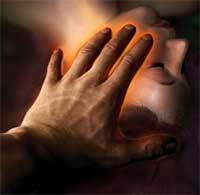
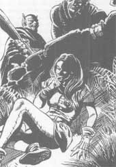
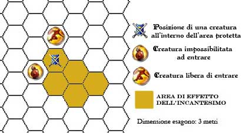

Enciclica degli Incantesimi Generali di Loky
1° LIVELLO DI POTERE
| Analyze Balance | Divination |
| Sphere : | Divination, Number |
| Range : | 30 metri |
| Components : | V, S, M |
| Duration : | 1 round per livello |
| Casting Time : | 1 round |
| Area of Effect : | Una creatura, un oggetto od un'area |
| Saving Throw : | None |
Questo incantesimo
permette al chierico di avvertire quanto l'aura di una creatura, un oggetto od
un'area si discosta dal True Neutral. La magia però non specifica in che
direzione l'aura esaminata si discosta dall'equilibrio centrale. In particolare,
il chierico potrà esaminare un'aura presente nel raggio della magia in ogni
round di durata restando concentrato per l'intera durata del round. All'esito
dell'analisi il chierico potrà avere i seguenti risultati:
- Nessuno Scostamento, Allineamento possibile: True Neutral
- Leggero Scostamento (Una parte dell'allineamento non è neutrale), Allineamenti
possibili: Chaotic Neutral o Lawful Neutral
- Grande Scostamento (Entrambe le parti dell'allineamento non sono neutrali),
Allineamenti possibili: Chaotic Evil, Chaotic Good, Lawful Evil, Lawful Good.
Il chierico, inoltre, ha il 5% possibilità per livello di lancio
dell'incantesimo (fino ad un massimo del 50% al 10° livello) di determinare, in
caso di scostamento una parte selezionata casualmente dell'allineamento
dell'aura. Si noti che attraverso l'uso di questa magia il chierico non può
individuare oggetti o elementi nascosti (come trappole, ecc...) potendo lo
stesso analizzare l'aura delle sole cose che vede e della cui esistenza ha piena
consapevolezza. Il componente materiale di questo incantesimo sono 4 monete di
ferro con incisioni preziose che il chierico lancia tra le mani quando si
concentra per determinare lo scostamento delle aure. Tali monete dal valore
complessivo di 20 monete d'oro e dal peso di 1/2 libbra non si consumano al
lancio dell'incantesimo.
| Calculate | Divination |
| Sphere : | Divination, Number |
| Range : | 0 |
| Components : | S, M |
| Duration : | Istantanea |
| Casting Time : | 1 round |
| Area of Effect : | The Caster |
| Saving Throw : | None |
Questo incantesimo permette al chierico di determinare le specifiche provabilità di successo di una qualsiasi singola azione concreta. Per azione si intende una singola specifica attività sia possibile effettuare e risolvibile in un tiro di dado. In particolare, quando il chierico lancia questo incantesimo costui deve dichiarare quale azione desidera valutare e da quale soggetto (tra quelli che si trovano entro 30 metri ed in sua vista) la stessa dovrebbe essere compiuta. Il chierico, infatti, non deve necessariamente determinare le possibilità di successo delle proprie azioni. Le azioni devono essere risolvibili attraverso un tiro di dado (o anche diversi tiri se direttamente conseguenti l'uno all'altro). Esempi di azioni la cui possibilità di successo può essere determinata sono le seguenti: La possibilità di rimuovere una trappola, di colpire un determinato nemico, scalare una parete rocciosa, sfondare una porta a spallate ecc... Il chierico non potrà, però, determinare generiche possibilità di successo di azioni intese in senso lato, costui non potrà chiedere, infatti, le possibilità di successo di sconfiggere un mostro o di terminare una missione, ciò in quanto tali risultati sono ottenibili solo con il compimento di una pluralità di singole azioni concrete (come ad es. tiri per colpire e tiri di danno reciproci ecc...) susseguenti l'una alle altre. Il chierico ha una possibilità di determinare correttamente le probabilità di successo di un'azione è pari al 70% + 1% per livello di lancio dell'incantesimo (se il chierico effettua un tiro superiore non sarà in grado di determinare alcuna probabilità di successo). Si noti che la magia non motiverà in alcun modo il risultato anche se la stessa terrà presente tutti i fattori realmente presenti, anche quelli di cui il chierico è totalmente allo scuro. Per tale motivo il chierico potrebbe ricevere da questa magie risposte del tutto sorprendenti. Il componente materiale di questo incantesimo è un piccolo abaco d'avorio dal valore di 100 monete d'oro e dal peso di 2 libbre che non si consuma al lancio dell'incantesimo.
| Call Upon Faith | Summoning |
| Sphere : | Summoning |
| Range : | 0 |
| Components : | V, S, M |
| Duration : | Speciale |
| Casting Time : | 1 |
| Area of Effect : | The Caster |
| Saving Throw : | None |
Prima di iniziare una qualsiasi difficile azione il chierico può invocare l'aiuto della propria divinità. In questo modo il chierico otterrà un beneficio corrispondente ad un bonus +3 (+15%) che potrà applicare ad un singolo tiro necessario ad effettuare il compimento dell'azione. Questo beneficio può essere utilizzato solo per il compimento di un'azione che inizi e si concluda nel round immediatamente successivo a quello del lancio della presente magia. Si noti che questo incantesimo non può essere utilizzato nel caso in cui il chierico desideri effettuare un'azione consistente nell'invocare un intervento divino. Il componente materiale di questo incantesimo è il simbolo sacro del chierico.
| Combine | Summoning |
| Sphere : | All |
| Range : | Tocco |
| Components : | V, S |
| Duration : | Speciale |
| Casting Time : | 1 round |
| Area of Effect : | Speciale |
| Saving Throw : | None |
Questo incantesimo cumulativo può essere utilizzato da due a quattro chierici. La magia, per precisione, viene utilizzata sempre sul chierico del livello di esperienza più lato (in caso di chierici di pari livello su uno a loro scelta) da quelli di livello più basso. Costoro lanciano la magia toccando il chierico che deve ottenere gli effetti benefici. Quest'ultimo quindi potrà considerarsi, fino a che perdura questa magia, di un livello di esperienza superiore per ogni chierico che ha utilizzato su di lui questo incantesimo al solo fine di effettuare un'azione di scacciare o controllare i non morti e di determinare il livello di lancio dei propri incantesimi. Si noti che, nonostante il chierico possa lanciare magie ad un livello di lancio superiore, questo incantesimo non permette al chierico di accedere a magie diverse da quelle alle quali aveva regolarmente accesso né di ottenere punti preghiera supplementari. Per funzionare la magia richiede che il chierico beneficiario non si sposti dalla posizione occupata al momento del suo lancio nonché il mantenimento della concentrazione da parte dei chierici che l'hanno lanciata i quali, se attaccati durante il mantenimento della concentrazione, saranno considerati (sempre che non decidano di interromperla) come se fossero storditi [stunned]. Se, per qualsiasi motivo, viene meno la concentrazione del chierico che ha lanciato questo incantesimo od il suo contatto fisico con il beneficiario (ad es. il chierico che ha lanciato la magia si sposta o cade al suolo knockdown) la magia terminerà immediatamente solo in relazione al chierico che ha interrotto la concentrazione. Se, invece, è il chierico che beneficia di questa magia a spostarsi dalla posizione originariamente occupata (od a cadere al suolo knockdown) costui farà venir meno tutte le magie di combine che gli erano state lanciate. Si noti, infine, che se è solo il chierico beneficiario a perdere la concentrazione nel lancio delle sue magie ciò non influenzerà gli incantesimi di combine che gli erano stati lanciati addosso.
| Cure Light Wounds | Necromancy |
| Sphere : | Healing |
| Range : | Tocco |
| Components : | V, S |
| Duration : | Istantanea |
| Casting Time : | 5 |
| Area of Effect : | Una Creatura |
| Saving Throw : | None |
|
 |
Quando il chierico lancia questa magia la sua mano, risplendendo di un bagliore dorato, infonde nella creatura toccata un flusso di pura energia positiva. L'energia positiva sprigionata da questo incantesimo permetterà al chierico di curare 1d6+1 punti ferita persi, in precedenza, dalla creatura toccata. Questo incantesimo non avendo natura rigenerativa non permette di curare le ferite prodotte dall'acido. Questa magia, inoltre, non avrà alcun effetto sulle creature inanimate (si pensi ad una comune pianta) e sulle creature non dotate di un corpo organico basato sull'energia positiva (si pensi, ad esempio, alla categoria dei costruiti ed agli elementali). Infine, le creature la cui essenza si basa sull'energia negativa (si pensi ad i non-morti) non solo non riceveranno alcun beneficio dalla sottoposizione a questo incantesimo ma subiranno 1d6+1 danni per l'irradiamento di energia positiva per loro letale. |
| Detect Magic | Divination |
| Sphere : | Divination |
| Range : | 0 |
| Components : | V, S, M |
| Duration : | 1 round |
| Casting Time : | 1 round |
| Area of Effect : | The Caster |
| Saving Throw : | None |
Quando il chierico lancia questo incantesimo riesce a percepire la luminosità delle aure magiche presenti entro 30 metri di distanza dallo stesso. Per poter percepire la luminosità dell'aura, però, il chierico deve poter vedere, anche se parzialmente, l'oggetto o la zona in cui l'aura è in effetto. Un chierico non potrà vedere, ad es. l'aura di un oggetto magico che si trova all'interno di uno zaino o sepolto da macerie. In base all'intensità dell'aura, inoltre, il chierico potrà determinare la potenza dell'incantamento. Se si tratta di effetti magici dovuti ad incantesimi, quindi, il chierico potrà determinare il livello di potere della magia di cui analizza gli effetti. Se, invece, si tratta di oggetti magici costui potrà determinarne la potenza dell'incantamento come indicata nella seguente scala:
|
POTENZA DELL'INCANTAMENTO |
PUNTI ESPERIENZA |
| Least Minor Enchantment | 75 punti esperienza |
| Lesser Minor Enchantment | 100 punti esperienza |
| Minor Enchantment | 150 punti esperienza |
| Superior Minor Enchantment | 250 punti esperienza |
| Greater Minor Enchantment | 375 punti esperienza |
| Lesser Enchantment | 500 punti esperienza |
| Superior Enchantment | 1000 punti esperienza |
| Greater Enchantment | 1500 punti esperienza |
Il componente materiale di questo incantesimo è il simbolo sacro del chierico.
| Detect Poison | Divination |
| Sphere : | Divination |
| Range : | 30 metri |
| Components : | V, S, M |
| Duration : | Istantanea |
| Casting Time : | 4 |
| Area of Effect : | Una creatura od un oggetto |
| Saving Throw : | None |
Quando il chierico lancia questo incantesimo riesce a percepire se l'oggetto o la creatura indicata durante il lancio della magia è velenoso od è stato avvelenato. Risulterà velenosa qualsiasi creatura abbia capacità venefiche. Il chierico potrà ad esempio individuare un'arma od una bevanda che è stata avvelenata. Si noti che il chierico non rileverà come velenosi gli oggetti magici che solo quando attivati diventino tali a meno che la magia non sia lanciata durante la loro attivazione (ciò contrariamente a quegli oggetti che sono sempre potenzialmente velenosi ma che richiedono un particolare tiro per infondere il loro veleno, si pensi ad un'arma di arcanite che risulterà sempre velenosa). Il chierico, inoltre, avrà una possibilità pari al 5% per livello di lancio dell'incantesimo (fino ad un massimo del 95%) di determinare anche la tipologia e gli effetti specifici del veleno che ha individuato. Il componente materiale di questo incantesimo è una striscia di velluto bianco che diventa nero se l'oggetto dell'incantesimo è velenoso od è stato avvelenato. Comunemente 10 strisce di questo velluto hanno un costo di 3 monete d'oro ed un peso pari ad 1 libbra. Il componente si consuma al lancio dell'incantesimo.
| Emotion Read | Divination |
| Sphere : | Thought |
| Range : | 30 metri |
| Components : | V, S |
| Duration : | Istantanea |
| Casting Time : | 3 |
| Area of Effect : | Una creatura |
| Saving Throw : | Negates |
Questo incantesimo può essere lanciato su qualsiasi creatura abbia un'intelligenza pari o superiore a 5 (Low Intelligence). La creatura ha diritto ad un tiro salvezza su mente per evitare gli effetti della magia. Se il tiro salvezza fallisce il chierico percepirà lo stato emotivo della creatura al momento del lancio dell'incantesimo. In particolare sarà percepita l'emozione più intensa provata dalla creatura in quel momento. Si noti che il chierico percepirà unicamente lo stato emotivo (ad esempio dolore, odio, rancore, rabbia, tristezza, paura, felicità...) della creatura ma non potrà determinare magicamente il motivo per il quale quella creatura prova quella sensazione né nei confronti di chi quella sensazione è provata.
| Invisibility to Undead | Abjuration |
| Sphere : | Necromancy |
| Range : | Tocco |
| Components : | V, S, M |
| Duration : | 6 rounds |
| Casting Time : | 4 |
| Area of Effect : | Una creatura |
| Saving Throw : | Special |
La creatura protetta da questo incantesimo diventa temporaneamente invisibile ai non morti i quali non percepiranno la sua presenza per tutta la durata della magia. La magia ha effetto automaticamente nei confronti dei non morti fino a 4 dadi vita. Creature non morte di 5 o più dadi vita, invece, avranno diritto a superare un tiro salvezza su magia. Se il tiro salvezza riesce costoro percepiranno normalmente la presenza della creatura. Per tutta la durata dell'incantesimo la creatura protetta non potrà effettuare validamente tentativi di scaccio o di controllo dei non morti. Se la creatura protetta effettua un qualsiasi attacco o lancia un qualsiasi incantesimo la magia terminerà immediatamente. Il componente materiale di questo incantesimo è il simbolo sacro del chierico.
| Know Age | Divination |
| Sphere : | Time |
| Range : | Tocco |
| Components : | V, S |
| Duration : | Istantanea |
| Casting Time : | 3 |
| Area of Effect : | Un oggetto o una creatura |
| Saving Throw : | None |
Il chierico riesce a conoscere immediatamente l'età di un qualsiasi oggetto o creatura che tocca. Il chierico conoscerà l'età approssimata all'anno più vicino. Per le creature la magia determinerà l'età in base alla nascita delle stesse. Per quanto riguarda gli oggetti, invece, la magia può essere lanciata unicamente su oggetti che rappresentano manufatti creati da creature intelligenti. Questa magia, ad esempio, non può essere lanciata su una roccia ma può essere lanciata su una pietra scolpita. La magia determinerà, quindi, l'età dell'oggetto intesa come periodo di tempo intercorso dall'ultima modifica operata che ha trasformato l'oggetto nella sua forma attuale.
| Know Time | Divination |
| Sphere : | Time |
| Range : | 0 |
| Components : | V, S |
| Duration : | Istantanea |
| Casting Time : | 1 |
| Area of Effect : | The Caster |
| Saving Throw : | None |
Quando il chierico lancia questa magia riesce a conoscere immediatamente l'esatto momento temporale del lancio del suo incantesimo. Il chierico conoscerà l'anno, il mese, il giorno l'ora ed il minuto esatto del lancio della magia. Si noti che il chierico conoscerà queste informazioni sulla base del calendario e delle unità di misura temporali dallo stesso normalmente utilizzato. Questa magia non funziona nei piani dimensionali diversi dal primo piano materiale.
| Light | Evocation |
| Sphere : | Creation |
| Range : | 12 metri + 6 metri per livello di lancio oltre il 1° (max. 54 metri) |
| Components : | V, S |
| Duration : | Speciale |
| Casting Time : | 4 |
| Area of Effect : | Speciale |
| Saving Throw : | Speciale |
Con questa magia
il chierico invoca il potere della luce. Il chierico può utilizzare questa magia
in due modalità. Con il primo metodo il chierico crea un globo luminoso al fine
di illuminare. La luce del globo illuminerà come una lanterna in una sfera di 9
metri di raggio. La sfera apparirà anche sospesa nell'aria nel punto indicato
dal chierico entro il raggio d'azione dell'incantesimo. Qualora il chierico
lancia la magia su un oggetto la sfera si sposterà con lo stesso. Si noti che,
poiché la luce parte dalla sfera per poi espandersi nell'area d'effetto, qualora
la luce sia creata su un oggetto indossato o trasportato da una creatura la
stessa potrà essere disturbata dal bagliore qualora decida di combattere con
altre creature ricevendo un malus di -2 ai propri tiri per colpire ed il 20% di
fallire nel lancio degli incantesimi (la penalità relativamente al lancio degli
incantesimi non si applicherà qualora la luce sia posta sulla punta di una verga
della stregoneria utilizzata nel lancio delle magie). La magia lanciata secondo
tale modalità non può essere lanciata su oggetti trasportati da creature che non
siano consenzienti. In alcuni casi l'incantesimo lanciato con il seguente metodo
può servire per neutralizzare tenebre create magicamente quando ciò è
espressamente previsto da tali effetti. Si consideri ad esempio l'incantesimo od
il potere Darkness. Per ottenere questo effetto la magia deve essere
necessariamente essere lanciata per tal finalità. In quest'ultimo caso, il globo
di luce non apparirà ma al contempo svaniranno le tenebre create magicamente.
Entrare con una sfera di luce in un'area di tenebre magiche, infatti, non farà
venire meno le stesse anche se la luce (nonostante risulti oscurata) continuerà
ad avere effetto (riprendendo ad illuminare quando sarà portata all'esterno
dell'area tenebrosa). Lanciata secondo tale metodo la sfera luminosa permarrà
per 1 ora per livello di lancio dell'incantesimo.
Con il secondo metodo il chierico invoca il potere della luce per accecare un
proprio avversario che si trovi nel raggio d'azione dell'incantesimo. Quando è
lanciata in questa modalità nessuna sfera luminosa apparirà. Solo creature
munite di una normale vista (occhi) possono subire gli effetti di questo
incantesimo. La vittima ha diritto ad effettuare un tiro salvezza su magia per evitare gli effetti della luce. Se il tiro salvezza fallisce la
creatura sarà accecata per 1d3+2 rounds. In questo caso, la cecità non potrà essere
annullata con un incantesimo di tenebre ma potrà essere rimossa da una magia di
Cure Blindness o con un Dispel Magic lanciato con successo.
| Personal Reading | Divination |
| Sphere : | Numbers |
| Range : | 0 |
| Components : | V, S, M |
| Duration : | Istantanea |
| Casting Time : | 1 turn |
| Area of Effect : | The Caster |
| Saving Throw : | None |
Con questa magia
divinatoria il chierico cerca di ottenere informazioni generali su una qualsiasi
creatura abbia conoscenza. Durante il lancio della magia il chierico si
concentra su una creatura della cui esistenza abbia concreta consapevolezza. Si
noti che non occorre che questa creatura sia presente al momento del lancio
dell'incantesimo, né che il chierico abbia conosciuto la creatura personalmente
potendo la magia essere lanciata anche su una creatura di cui il chierico abbia
conoscenza indiretta (ad esempio tramite il racconto di un terzo od un testo
scritto). Il chierico ha quindi una possibilità base di ottenere tali
informazioni pari al 50%. A tale possibilità va applicato un modificatore di + o
- 3% per livello di differenza tra il chierico ed i dadi vita/livelli della
creatura. In ogni caso il chierico potrà avere una possibilità massima di
ricevere le informazione pari al 95% ed una possibilità minima pari al 5%. Per
fare un esempio, un chierico che lanci questa magia al 6° livello di esperienza
cercando di recepire informazioni su una creatura di 9 davi vita/livelli avrà il
41% di probabilità di successo. Se il chierico fallisce nel tiro costui non
potrà provare nuovamente a ricevere informazioni sulla medesima creatura prima
di aver raggiunto un nuovo livello di esperienza. Se il chierico riesce nel
tiro, costui riceverà informazioni generali sulla creatura. In particolare,
costui potrà venire a conoscenza delle seguenti informazioni:
- La razza di appartenenza della creatura.
- La classe di personaggio della stessa.
- Il livello (od i dadi vita) raggiunto dalla creatura.
- La professione intrapresa ed il suo inserimento sociale (inteso come ruolo
attualmente svolto dalla creatura nella società in cui la stessa è inserita).
Si noti che se il chierico si concentra su una creatura non più in vita la magia
si considererà automaticamente fallita, parimenti la magia fallirà se la
creatura oggetto della divinazione si trova in un piano dimensionale diverso da
quello di chi lancia l'incantesimo (il chierico, però, non potrà distinguere tra
queste cause di fallimento ed un comune tiro fallito). Deve osservarsi che la
magia darà le informazioni sulla creatura della quale il chierico ha diretta
percezione e sulla quale si è concentrato, non distinguendo tra vere o false
identità. Se, ad esempio, il chierico incontra il capo di una guarnigione che in
realtà è un mago che ne ha preso le sembianze e si concentra per ricevere
informazioni sul capo della guarnigione, costui verrà a conoscenza delle
informazioni sul vero capo della guarnigione (se ancora in vita) e non sul mago
della cui esistenza il chierico non ha alcuna consapevolezza. Il componente
materiale di questo incantesimo è un piccolo volume astrologico dal peso di 1/2
libba e dal costo di 100 monete d'oro che non si consuma al lancio
dell'incantesimo.
| Protection from Chaos | Abjuration |
| Sphere : | Law |
| Range : | Tocco |
| Components : | V, S, M |
| Duration : | 3 round per livello |
| Casting Time : | 4 |
| Area of Effect : | Una creatura |
| Saving Throw : | None |
Questo incantesimo
protegge la creatura che lo riceve in tre diverse modalità:
1) Tutte le creature di indole caotica (allineamento chaotic) che attaccano chi
è protetto da questo incantesimo ricevono -2 ai loro tiri per colpire. Inoltre,
qualora creature della medesima indole impongano in via diretta (ad esempio
attraverso un incantesimo od un'abilità speciale) a chi è protetto da questa
magia il superamento di un qualsiasi tiro salvezza quest'ultimo riceverà un
bonus di +2 al tiro per superarlo. I medesimi benefici si applicano nei
confronti delle creature che, sebbene non siano di indole caotica, si trovano
sotto gli effetti di una qualsiasi forma di confusione magica.
2) La protezione magica previene il contatto fisico tra il corpo di chi riceve
questo incantesimo ed il corpo di qualsiasi creatura di indole caotica che sia
di origine extraplanare (si pensi ad esempio ad un elementale od ad un essere
demoniaco) nonché con quello di creature, sempre di indole caotica, "richiamate"
nel Primo Piano Materiale tramite magie della scuola Summoning od effetti magici
e rituali ad esse equivalenti. Si noti che la protezione magica previene solo il
contatto fisico diretto tra i due corpi impedendo ad esempio l'utilizzo di
attacchi fisici naturali o di poteri attivabili a tocco. Non saranno, invece,
impediti attacchi che avvengono attraverso l'uso di armi nonché ogni forma di
attacco o di utilizzo di potere a distanza. Se chi è protetto da questa magia,
però, effettuerà una qualsiasi forma di attacco nei confronti di una creatura
che era impossibilitata a toccarlo questa seconda forma di protezione sarà
immediatamente interrotta esclusivamente nei confronti della specifica creatura
attaccata.
3) La protezione magica dona a chi la riceve una possibilità di resistere al
magico (magic resistance) pari al 10% + 5% per livello di lancio nei confronti
di qualsiasi incantesimo clericale della sfera Chaos. Si noti che questa
resistenza al magico non può essere in alcun caso annullata dal beneficiario per
l'intera durata dell'incantesimo.
Il componente materiale di questo incantesimo è un anello d'oro forgiato da un
fabbro di indole legale dal valore minimo di 12 g.p. e dal peso di 1/10 di
libbra che si consuma al lancio dell'incantesimo.
| Protection from Evil | Abjuration |
| Sphere : | Protection |
| Range : | Tocco |
| Components : | V, S, M |
| Duration : | 3 round per livello |
| Casting Time : | 4 |
| Area of Effect : | Una creatura |
| Saving Throw : | None |
Questo
incantesimo protegge la creatura che lo riceve in due diverse modalità:
1) Tutte le creature di indole malvagia (allineamento evil)
che attaccano chi è protetto da questo incantesimo ricevono -2 ai loro tiri per
colpire. Inoltre, qualora creature della medesima indole impongano in via
diretta (ad esempio attraverso un incantesimo od un'abilità speciale) a chi è
protetto da questa magia il superamento di un qualsiasi tiro salvezza
quest'ultimo riceverà un bonus di +2 al tiro per superarlo.
2) La protezione magica previene il contatto fisico tra il corpo di chi riceve
questo incantesimo ed il corpo di qualsiasi creatura di origine extraplanare (si
pensi ad esempio ad un elementale od ad un essere demoniaco) nonché con quello
di creature "richiamate" nel Primo Piano Materiale tramite magie della scuola Summoning
od effetti magici e rituali ad esse equivalenti. Si noti che la protezione
magica previene solo il contatto fisico diretto tra i due corpi impedendo ad
esempio l'utilizzo di attacchi fisici naturali o di poteri attivabili a tocco.
Non saranno, invece, impediti attacchi che avvengono attraverso l'uso di armi
nonché ogni forma di attacco o di utilizzo di potere a distanza. Se chi è
protetto da questa magia, però, effettuerà una qualsiasi forma di attacco nei
confronti di una creatura che era impossibilitata a toccarlo questa seconda
forma di protezione sarà immediatamente interrotta esclusivamente nei confronti
della specifica creatura attaccata.
Il componente materiale di questo incantesimo è una fiaschetta di acqua santa o
una dose di incenso bruciata in un incensiere che si consumano al lancio
dell'incantesimo.
| Ring of Hands | Abjuration |
| Sphere : | Protection |
| Range : | 0 |
| Components : | V, S |
| Duration : | 3 rounds + 1 round / 2 livelli (max 10 rounds) |
| Casting Time : | 5 |
| Area of Effect : | Speciale |
| Saving Throw : | None |
Questo incantesimo richiede per svolgere i suoi effetti che partecipino allo stesso più chierici, in particolare potranno partecipare alla magia da 2 a 4 chierici (il chierico che lancia la magia che potrà ricevere supporto da un massimo di altri tre chierici). Un solo chierico lancia questa magia mentre gli altri chierici si limiteranno a restare fermi in una posizione adiacente a costui stringendosi tutti per mano. La magia, quindi, creerà un'area di puro bene divino che, centrata sul chierico che ha lanciato la magia, si estenderà in forma sferica con un raggio di 6 metri + 3 metri per ogni chierico ulteriore a quello che lancia la magia (la sfera potrà avere, quindi, un raggio che va da 9 a 15 metri). All'interno dell'area le vibrazioni divine condizioneranno tutte le creature di allineamento malvagio (evil) presenti nella stessa le quali riceveranno una penalità di -1 ai loro tiri per colpire per ogni chierico oltre a quello che ha lanciato la magia che collabora alla formazione dell'area (quindi da -1 a -3 al tiro per colpire). Tale penalità sarà applicata a queste creature fino a che le stesse si troveranno nell'area d'effetto dell'incantesimo e per tutta la sua durata (4 rounds al 1° e 2° livello di lancio, 5 rounds al 3° e 4° livello di lancio, e così via... fino ad un massimo di 10 rounds a partire dal 13° livello di lancio). Inoltre, qualora creature della medesima indole malvagia impongano in via diretta (ad esempio attraverso un incantesimo od un'abilità speciale) il superamento di un qualsiasi tiro salvezza a chi si trova all'interno dell'area (in questo caso occorre che si trovi all'interno dell'area solo chi deve superare il tiro salvezza) quest'ultimo riceverà un bonus di +1 al tiro per superarlo per ogni chierico oltre a quello che ha lanciato la magia che coopera con lo stesso (quindi da +1 a +3 al tiro salvezza). Si noti che solo il chierico che ha lanciato la magia deve restare fermo per l'intera durata dell'incantesimo e necessita del mantenimento della concentrazione. Se costui effettua ogni altra azione oppure perde la concentrazione l'incantesimo terminerà definitivamente. Gli altri chierici, invece, per dare supporto non dovranno mantenere la concentrazione essendo sufficiente che gli stessi stringano per mano il chierico che ha lanciato la magia restando sul posto senza effettuare altre azioni. Questi potranno lasciare la posizione di supporto e tornarci nel corso della durata dell'incantesimo facendo rispettivamente ridurre od estendere l'area d'effetto ed il relativo bonus concesso (a partire dal momento del round in cui tornano e stringono la mano del chierico, si consideri a tal fine il fattore iniziativa di un'azione fisica complessa). Se il chierico che ha lanciato la magia è da solo la stessa perdurerà senza avere effetti fino a che altri chierici non gli diano supporto. Non occorre che tutti i chierici siano membri del medesimo culto religioso. Il chierico che ha lanciato la magia, infatti, può essere supportato da chierici di divinità diverse. Unica eccezione è rappresentata dai chierici delle divinità appartenenti alle Forze Oscure i quali non possono in alcun caso supportare validamente un chierico che ha lanciato questa magia.
| Speak with Astral Traveler | Abjuration |
| Sphere : | Protection |
| Range : | Tocco |
| Components : | V, S |
| Duration : | 1 round per livello |
| Casting Time : | 1 round |
| Area of Effect : | Una creatura |
| Saving Throw : | None |
Quando una creatura lancia una magia la magia denominata Astral Spell (7° livello di potere dei chierici) od una magia similare, costui lascia il suo corpo fisico in un'animazione sospesa mentre viaggia con il proprio corpo astrale. Orbene, questa magia permette di comunicare con il viaggiatore astrale. Il chierico, in particolare, dovrà toccare il corpo che si trova in stato comatoso del viaggiatore astrale per istaurare con lo stesso una comunicazione mentale (dalla medesima velocità di una comunicazione verbale). Il chierico dunque potrà comunicare con il viaggiatore astrale per tutta la durata dell'incantesimo essendo necessario, però, il mantenimento di un contatto fisico diretto tra il chierico ed il corpo del viaggiatore.
| Tought Capture | Abjuration |
| Sphere : | Protection |
| Range : | 0 |
| Components : | V, S |
| Duration : | Istantanea |
| Casting Time : | 4 |
| Area of Effect : | The Caster |
| Saving Throw : | None |
|
 |
Questo incantesimo si basa su una teoria sviluppata dagli studiosi della sfera Tought e della Scuola di Magia di Charm. In base a questa teoria, quando un pensiero vede la luce nella mente di una creatura lo stesso viene ad esistenza nello spazio come autonomo oggetto mentale normalmente non percepibile con i comuni sensi. Attraverso il lancio di questo incantesimo, dunque, il chierico riesce a percepire i pensieri presenti nel luogo in cui si trova. Con ogni lancio di questa magia il chierico percepirà un unico pensiero presente sul luogo a partire da quello legato alla sensazione emotiva più forte. Pensieri particolarmente forti, come quelli di una creatura morente, saranno percepiti con maggiore chiarezza ed in questi casi il chierico ha una possibilità pari al 25% + 3% per livello di lancio della magia di avere una visione del momento in cui la creatura ha elaborato il pensiero percepito (tutte le immagini saranno percepite dal punto di vista della creatura che ha elaborato il pensiero). Pensieri di minore intensità saranno percepiti con minore chiarezza, non daranno mai luogo ad alcuna visione ed, in alcuni casi, potranno essere percepiti in modo criptico o in forma di indovinello. Si noti che il chierico, nella normalità dei casi, non sarà a conoscenza di quale creatura ha elaborato il pensiero che è riuscito a percepire. Una volta percepito con l'utilizzo di questa magia il pensiero si dissolverà e non potrà nuovamente essere percepito. Solo i pensieri delle creature con un punteggio di intelligenza pari o superiore a 5 (Low Intelligence) possono essere percepiti attraverso l'uso di questo incantesimo. |
2° LIVELLO DI POTERE
| Calm Violence | Charm |
| Sphere : | Law |
| Range : | 0 |
| Components : | V, S, M |
| Duration : | 5 rounds |
| Casting Time : | 3 |
| Area of Effect : | Speciale |
| Saving Throw : | Negates |
Con questo incantesimo il chierico cerca di fermare temporaneamente la violenza che si verifica intorno alla sua persona. Il chierico lancia questa magia e pronuncia contestualmente parole di pace. La magia avrà effetto su un numero massimo di creature pari a 2 + 1 per livello di lancio della magia che si trovino, al momento del suo lancio, nell'area d'effetto della stessa (sfera di 30 metri di raggio centrata sul chierico). Il chierico non può scegliere su quali creature la magia avrà effetto. L'incantesimo, infatti, avrà effetto sulle creature presenti nell'area in ordine di distanza crescente dal chierico (dalle più vicine alle più lontane), in caso di creature equidistanti presenti in numero superiore a quelle condizionabili dal chierico si sceglierà causalmente quali risultino coinvolte. Al lancio dell'incantesimo il chierico dovrà superare una prova di carisma. Tutte le creature coinvolte dovranno superare un tiro salvezza su mente, se il chierico ha superato la prova di carisma tutte le creature subiranno un malus di -10 % al tiro salvezza (subiranno una penalità di -20 % se la prova + superata con successo critico, otterranno un bonus di +10 % se la prova è fallita con fallimento critico). Le creature che falliscono il tiro salvezza saranno obbligate a non commettere azioni violente (attacchi fisici, lancio di magie di danno, ecc…) nei confronti di ogni altra creatura per tutta la durata della magia. In particolare, costoro potranno, sotto l’effetto di questa magia, lanciare magie protettive, muoversi, preparare armi, difendersi, parare, schivare, scappare, usare oggetti magici non nocivi per le altre creature, ecc... ma non potrà nuocere in alcun modo con azioni che abbiano come loro conseguenza diretta danneggiare altre creature (anche attivando per es. trappole, tagliare per es. la corda di una creatura che sta scalando una parete, ecc…). Si noti che qualora, durante l'effetto della magia, una creatura che ha fallito il tiro salvezza risulti attaccata da una creatura avversaria (o subisca da parte di questa un'azione che in base alla valutazione del Dungeon Master può considerarsi deliberatamente ostile) la stessa sarà considerata libera a partire dalla fine del round in corso. A tal fine saranno considerati solo gli attacchi (e le azioni ostili) che coinvolgono direttamente la creatura sottoposta agli effetti dell'incantesimo, essendo irrilevanti azioni ostili compiute nei confronti di suoi amici od alleati. Il componente materiale è il simbolo sacro del chierico.
| Cure Moderate Wounds | Necromancy |
| Sphere : | Healing |
| Range : | Tocco |
| Components : | V, S |
| Duration : | Istantanea |
| Casting Time : | 6 |
| Area of Effect : | Una Creatura |
| Saving Throw : | None |
|
Quando il chierico lancia questa magia la sua mano, risplendendo di un bagliore dorato, infonde nella creatura toccata un flusso di pura energia positiva. L'energia positiva sprigionata da questo incantesimo permetterà al chierico di curare 2d6+1 punti ferita persi, in precedenza, dalla creatura toccata. Questo incantesimo non avendo natura rigenerativa non permette di curare le ferite prodotte dall'acido. Questa magia, inoltre, non avrà alcun effetto sulle creature inanimate (si pensi ad una comune pianta) e sulle creature non dotate di un corpo organico basato sull'energia positiva (si pensi, ad esempio, alla categoria dei costruiti ed agli elementali). Infine, le creature la cui essenza si basa sull'energia negativa (si pensi ad i non-morti) non solo non riceveranno alcun beneficio dalla sottoposizione a questo incantesimo ma subiranno 2d6+1 danni per l'irradiamento di energia positiva per loro letale. |
| Detect Charm | Divination |
| Sphere : | Divination |
| Range : | 30 metri |
| Components : | V, S |
| Duration : | Istantanea |
| Casting Time : | 4 |
| Area of Effect : | Una creatura |
| Saving Throw : | Negates |
Questo incantesimo permette al chierico di venire a conoscenza della circostanza se una creatura è sottoposta ad una qualsiasi forma di influenza o controllo mentale. Rileveranno, ai fini della verifica, tutti gli effetti di influenza o suggestione mentale rientranti nella categoria delle magie di charm, fascination, hypnosis, suggestion, che agendo sulla mente della creature ne alterano il volere o ne condizionano il comportamento. Chi è sottoposto agli effetti di questa magia deve superare un tiro salvezza su magia. Se il tiro salvezza riesce il chierico non riceverà alcuna informazione utile. Se il tiro salvezza fallisce il chierico saprà che la creatura è sottoposta ad una influenza mentale. Nel caso in cui il chierico percepisce l'influenza di una qualche forma di controllo mentale sulla creatura lo stesso avrà, inoltre, una possibilità pari al 5% per livello di esperienza (fino ad un massimo del 95%) di riconoscere anche la specifica tipologia di influenza mentale alla quale la creatura è sottoposta.
| Detect Curse | Divination |
| Sphere : | Divination |
| Range : | 9 metri |
| Components : | V, S, M |
| Duration : | Istantanea |
| Casting Time : | 1 round |
| Area of Effect : | Una creatura od un oggetto |
| Saving Throw : | Nessuno |
Questo incantesimo permette al chierico di rivelare la presenza di maledizioni su una creatura od un oggetto. Se l'oggetto o la creatura esaminato risulta maledetto, il chierico noterà, infatti, un alone di energia oscura che lo circonda. La licantropia, come infezione, è una maledizione particolare per cui il chierico riuscirà ad individuarla sulla creatura solo con una possibilità pari al 14% + 3% per livello di lancio di questo incantesimo (il tiro deve essere effettuato segretamente dal dungeon master). Si noti che i licantropi puri non risultano in alcun caso creature maledette in quanto in loro la licantropia è una parte naturale della fisiologia. Il componete materiale di questo incantesimo è un breviario di salmi sulle maledizioni dal peso di 1 libbra e dal valore di 100 monete d'oro che non si consuma al lancio della magia.
| Ethereal Barrier | Abjuration |
| Sphere : | Astral, Wards |
| Range : | 30 metri |
| Components : | V, S, M |
| Duration : | 1 turno/livello |
| Casting Time : | 1 round |
| Area of Effect : | Due sfere di 3 metri di diametro/livello |
| Saving Throw : | Speciale |
Attraverso l'uso di questa magia il chierico crea una zona protetta dal passaggio extradimensionale delle creature. L'area protetta dall'incantesimo corrisponde ad un numero di sfere (esagoni) di 3 metri pari a due sfere + una sfera supplementare per livello di lancio della magia (fino ad un massimo di 15 sfere al 13° livello di lancio). Il chierico può disporre queste aree a piacimento purché siano disposte senza soluzione di continuità tra di loro e siano tutte allo stesso livello di altezza dal suolo (non potendosi disporre una sull'altra). Le creature che si trovano all'interno dell'area non potranno utilizzare validamente, senza superare un tiro salvezza su magia, forme di extradimensionali (si pensi a tutte le forme di teleport, dimensional door, blink, ecc...). Questi poteri e magie semplicemente non avranno alcun effetto nel caso in cui le creature falliscano il tiro salvezza. Fino a che le creature si trovano all'interno dell'area d'effetto di questo incantesimo dovranno ripetere il suddetto tiro salvezza ad ogni utilizzo di poteri o lancio di incantesimi su menzionati. Parimenti non funzioneranno all'interno dell'area d'effetto, senza il superamento di un tiro salvezza su magia, forme di passaggio ad altri piani dimensionali come le abilità eteree o di phase. Infine, le creature che viaggiano nel piano etereo non potranno materializzarsi nel primo piano materiale all'interno dell'area d'effetto di questa magia senza superare un tiro salvezza su magia. Il componente materiale per questo incantesimo è una manciata di polvere di granito mista a polvere d'argento dal peso di 1/10 di libbra e dal costo pari a 50 g.p. che si consuma al momento del lancio della magia.
| Find Traps | Divination |
| Sphere : | Divination |
| Range : | 0 |
| Components : | V, S |
| Duration : | 3 turni |
| Casting Time : | 5 |
| Area of Effect : | The Caster |
| Saving Throw : | None |
Quando il chierico lancia questo incantesimo costui riesce ad individuare tutte le trappole, sia di natura magica che di natura meccanica, si trovino alla sua vista entro un raggio di 15 metri. In pratica il chierico percepirà la presenza di tali trappole su oggetti od aree senza riuscire a determinare la natura ed il funzionamento delle stesse. Il chierico percepirà sia trappole permanenti che trappole di natura temporanea, come ad esempio quelle realizzate tramite l'uso di singoli incantesimi. Anche trappole non direttamente lesive come può considerarsi un sistema di allarme o la chiusura automatica di un ingresso saranno rilevate attraverso l'uso di questa magia. Si noti che attraverso questa magia il chierico non può percepire la presenza di pericoli naturali o dovuti alla natura od allo scorrere del tempo (quali ad esempio possono essere alcune rocce pericolose, un ponte pericolante, sabbie mobili, ecc...), ciò in quanto la magia permette al chierico di percepire unicamente la presenza di trappole che sono state costruite attraverso l'attività di una creatura intelligente o create tramite la magia.
| Idea | Divination |
| Sphere : | Divination, Number |
| Range : | 0 |
| Components : | V, S |
| Duration : | Istantanea |
| Casting Time : | 4 |
| Area of Effect : | The Caster |
| Saving Throw : | None |
 |
Quando il chierico lancia questo incantesimo la divinità illumina la sua mente con un pensiero utile. Il pensiero, ovviamente, dipenderà dalla situazione concreta in cui si trova il personaggio al momento del lancio la magia. Ad esempio, il Dungeon Master può ricordare al personaggio un importante indizio in precedenza scoperto ma fino ad allora non adeguatamente soppesato oppure può ricordare al chierico avvenimenti che possono essere rilevanti nella situazione in cui si trova. Questa magia, in pratica, senza rivelare alcun nuovo elemento, può aiutare il chierico a ragionare sulle circostanze di cui è già a conoscenza. Si noti che questa magia non darà in alcun caso soluzioni dirette agli enigmi che il chierico deve risolvere limitandosi ad aiutare il personaggio a ragionare. Inoltre, occorre specificare che il chierico otterrà un pensiero utile a risolvere la situazione in cui si trova al momento del lancio della magia senza che costui possa indirizzare l'aiuto su specifici quesiti o questioni. Sarà il Dungeon Master a stabilire su quale questione la divinità riterrà rilevante che il chierico rifletta. In alcune circostanze l'idea può apparire criptica o sotto forma di indovinello. Questo incantesimo può essere lanciato validamente una sola volta al giorno. |
| Moment | Divination |
| Sphere : | Number |
| Range : | 0 |
| Components : | V, S, M |
| Duration : | 1 round per livello |
| Casting Time : | 1 round |
| Area of Effect : | Speciale |
| Saving Throw : | None |
Attraverso il lancio di questo incantesimo il chierico può determinare il momento migliore in cui una determinata azione deve essere effettuata. Per tutta la durata della magia il chierico deve restare fermo e mantenere la concentrazione. Se il chierico effettua una qualsiasi azione o perde la concentrazione la magia termina istantaneamente. L'azione può essere compiuta da una qualsiasi creatura si trovi entro 30 metri di distanza dal chierico, sia alla vista del chierico ed in grado di comunicare con lo stesso. Orbene, per tutta la durata della magia il chierico potrà indicare ad una di queste creature il momento migliore per effettuare l'azione che si accinge a compiere. Le creature che vogliono usufruire di questo beneficio devono, ogni round, attendere il suggerimento del chierico ricevendo una penalità di 1d3 alla loro iniziativa (si considereranno automaticamente in attesa - waiting). Orbene, ad ogni round di durata, prima del lancio di un qualsiasi dado per effettuare un'azione compiuta fisicamente da una creatura il chierico può intervenire dando alla stessa un bonus di +2 (+10% alle possibilità di successo). Il chierico, ad esempio, può indicare il miglior momento per colpire un avversario (donando il bonus al tiro per colpire della creatura) o per usare una competenza od un'abilità (si pensi ad un'abilità da ladro). Quanto ai tiri salvezza si consideri che il bonus è utilizzabile solo nel caso in cui questi rappresentino il risultato di un'azione del personaggio (si pensi all'azione di schivare o evitare un qualcosa, ossia a quei tiri salvezza cui normalmente si applica il bonus dovuto al punteggio di destrezza del personaggio) e non quando consistono nella resistenza del fisico o della mente del personaggio ad un effetto che lo ha colpito (si pensi al veleno iniettato, al risucchio di energia positiva, agli effetti mentali, a quelli debilitanti od a quelli paralizzanti). Si noti che il tiro per l'iniziativa, le azioni che richiedono di essere iniziate all'inizio del round (come il lancio di un incantesimo) o possono essere effettate solo a fine round non possono essere agevolate dall'utilizzo di questa magia. Questa magia, inoltre, non può aiutare nel lancio di dadi che rappresentano la conseguenza di un'azione, ad esempio l'incantesimo non può potenziare effetti di incantesimi o i danni prodotti dagli attacchi. Il chierico può agevolare un'unica azione al round. Possono essere agevolate solo le azioni delle creature che attendono il suggerimento del chierico e che siano in grado di ascoltarlo (nella normalità dei casi non possono darsi suggerimenti a creature assordate, stordite, dormienti od in stato comatoso). Il componente materiale di questo incantesimo sono tre dadi d'argento che il chierico lancia tra le mani mentre è in corso l'incantesimo, i dadi hanno un peso complessivo di 1/2 libbra ed un costo di 30 monete d'oro e non si consumano al lancio della magia.
| Silence 15' radious | Alteration |
| Sphere : | Guardian |
| Range : | 15 metri + 3 metri per livello |
| Components : | V, S |
| Duration : | 2 rounds + 1 round /2 livelli |
| Casting Time : | 5 |
| Area of Effect : | Sfera di 9 metri di diametro |
| Saving Throw : | Speciale |
Quando il chierico lancia questo incantesimo rende un'area sferica di 9 metri di diametro totalmente silenziosa. Qualsiasi suono non si diffonderà all'interno dell'area d'effetto della magia per tutta la durata dell'incantesimo (2 rounds al 1° livello di lancio, 3 rounds al 2° e 3° livello di lancio, 4 rounds al 4° e 5° livello di lancio, ecc...). Le conseguenze di tale magia possono essere notevoli, nell'area d'effetto, infatti, non sarà possibile parlare, lanciare incantesimi che richiedano il componente vocale, attivare oggetti che richiedano la pronuncia di una parola d'attivazione, né udire suoni prodotti all'esterno dell'area d'effetto. Ovviamente tutte le azioni e gli eventi compiuti interamente nell'area d'effetto non produrranno alcun suono né all'interno né all'esterno della sfera. L'incantesimo, inoltre, annulla all'interno dell'area d'effetto ogni forma di danno sonico ed impedisce che dal suo interno possano utilizzarsi tali forme di attacco. Se il chierico decide di centrare la magia su una creatura la stessa avrà diritto ad un tiro salvezza su magia per evitarne gli effetti. Se il tiro salvezza riesce la magia non avrà alcun effetto. Se il tiro salvezza fallisce la magia avrà effetto e la sfera seguirà la creatura restando centrata sulla stessa per tutta la durata dell'incantesimo.
| Withdraw | Alteration |
| Sphere : | Protection |
| Range : | 0 |
| Components : | V, S |
| Duration : | Speciale |
| Casting Time : | 1 round |
| Area of Effect : | The Caster |
| Saving Throw : | None |
Attraverso l'uso di questa magia il chierico altera lo scorrere del tempo in relazione alla propria persona al fine di ottenere più tempo per riflettere. Mentre un solo round passa per tutte le altre creature, per il chierico trascorre un ammontare di tempo pari a tre rounds più un round ogni due livelli di lancio di questa magia (3 rounds al 1° livello di lancio, 4 rounds al 2° e 3° livello di lancio, 5 rounds al 4° e 5° livello di lancio, ecc...). In pratica, il medesimo round in cui il chierico ha lanciato si dilaterà, esclusivamente nei suoi confronti, dell'ammontare prima specificato. Un chierico del 5° livello di esperienza, ad esempio, dopo il lancio del withdraw disporrà di altri 4 rounds prima che il round termini. In questo ammontare di tempo il chierico può unicamente pensare (il Dungeon Master dovrebbe concedere al giocatore 1 minuto di tempo supplementare per ogni round che decide di utilizzare per pensare) od effettuare il lancio di incantesimi divinatori o di cura che abbiano effetto unicamente sulla sua stessa persona. Il chierico, quindi, non potrà muoversi, spostarsi, od effettuate altre azioni complesse diverse dal meditare (leggere od azioni similari) e dal lanciare magie divinatorie o di cura sulla sua persona. Potranno ritenersi compatibili con questo incantesimo l'utilizzo di competenze o di azioni che richiedano esclusivamente di osservare e capire ciò che il chierico vede (si pensi a competenze come Monster Lore od all'azione di osservare con attenzione - observation).
| Wyvern Watch | Abjuration |
| Sphere : | Guardian |
| Range : | 15 metri |
| Components : | V, S, M |
| Duration : | Speciale |
| Casting Time : | 1 round |
| Area of Effect : | Sfera di 3 metri di diametro |
| Saving Throw : | Negates |
Questo incantesimo prende il suo nome dalla forma che lontanamente assomiglia ad una viverna della nebbiolina che si crea nell'area d'effetto dopo il suo lancio. Il chierico può difendere con questo incantesimo un'area sferica di 3 metri di diametro che si trovi nel raggio d'effetto dell'incantesimo. Se una creatura si trova all'interno dell'area al momento del lancio della magia o vi entra successivamente la stessa dovrà superare un tiro salvezza su mente. Indipendentemente dal risultato la magia terminerà definitivamente e la nebbia svanirà dall'area d'effetto. Se il tiro salvezza riesce la vittima non subirà alcun effetto, altrimenti sarà paralizzata (hold) da questa magia (si consideri un incantesimo avente effetti mentali). La vittima resterà paralizzata per un round per livello di lancio della magia oppure fino a che non venga infastidita. Se, infatti, la vittima è toccata, subisce la perdita di punti ferita, è costretta a superare un tiro salvezza oppure subisce un qualsiasi altro effetto sulla sua persona, la stessa sarà libera dalla paralisi alla fine del round in cui si è verificato tale evento. In ogni caso, anche qualora nessuna creatura entri nell'area d'effetto, la magia terminerà al raggiungimento del successivo momento di flusso di energia divina della divinità. Questa magia può considerarsi a tutti gli effetti una trappola creata magicamente. La nebbia creata dalla magia nell'area d'effetto non si nota dalla distanza ma diviene particolarmente visibile una volta che si è vicini alla stessa. Una creatura dotata di comune vista, infatti, ha una possibilità pari al 90% (-20% per ogni penalità alla Thac0 applicata per l'illuminazione e la chiarezza della vista nella zona) di individuarla una volta giunta in prossimità della stessa (esagono adiacente). La nebbia, invece, avendo una bassissima densità e la medesima temperatura dell'aria circostante non risulta visibile tramite la comune infravisione. Il componente materiale è il simbolo sacro del chierico.
3° LIVELLO DI POTERE
| Continual Light | Evocation |
| Sphere : | Creation |
| Range : | 12 metri + 6 metri per livello di lancio oltre il 1° (max. 75 metri) |
| Components : | V, S, (M) |
| Duration : | Speciale |
| Casting Time : | 6 |
| Area of Effect : | Speciale |
| Saving Throw : | Speciale |
Con questa magia
il chierico invoca il potere della luce. Il chierico può utilizzare questa magia
in due modalità. Con il primo metodo il chierico crea un globo luminoso al fine
di illuminare. La luce del globo illuminerà come la luce del pieno giorno in una sfera di
12
metri di raggio. La sfera apparirà anche sospesa nell'aria nel punto indicato
dal chierico entro il raggio d'azione dell'incantesimo. Qualora il chierico
lancia la magia su un oggetto la sfera si sposterà con lo stesso. Si noti che,
poiché la luce parte dalla sfera per poi espandersi nell'area d'effetto, qualora
la luce sia creata su un oggetto indossato o trasportato da una creatura la
stessa potrà essere disturbata dal bagliore qualora decida di combattere con
altre creature ricevendo un malus di -2 ai propri tiri per colpire ed il 20% di
fallire nel lancio degli incantesimi (la penalità relativamente al lancio degli
incantesimi non si applicherà qualora la luce sia posta sulla punta di una verga
della stregoneria utilizzata nel lancio delle magie). La magia lanciata secondo
tale modalità non può essere lanciata su oggetti trasportati da creature che non
siano consenzienti. In alcuni casi l'incantesimo lanciato con il seguente metodo
può servire per neutralizzare tenebre create magicamente quando ciò è
espressamente previsto da tali effetti. Si consideri ad esempio l'incantesimo od
il potere Darkness. Per ottenere questo effetto la magia deve essere
necessariamente essere lanciata per tal finalità. In quest'ultimo caso, il globo
di luce non apparirà ma al contempo svaniranno le tenebre create magicamente.
Entrare con una sfera di luce in un'area di tenebre magiche, infatti, non farà
venire meno le stesse anche se la luce (nonostante risulti oscurata) continuerà
ad avere effetto (riprendendo ad illuminare quando sarà portata all'esterno
dell'area tenebrosa). Lanciata secondo tale metodo la sfera luminosa permarrà
fino al successivo flusso di energia divina della divinità. Il chierico, però,
può stabilire uno speciale legame tra la luce creata con questo metodo e la
propria energia vitale al fine di renderla permanente. Ogni chierico può
stabilire un numero massimo di legami pari ad 1 ogni 3 livelli di esperienza
raggiunti (1 legame dal 1° al 3° livello di esperienza,2 legami dal 4° al 6°
livello di esperienza, e così via...). La luce creata utilizzando tale legame
perdurerà fino alla morte del chierico che l'ha lanciata (o fino a che non sia
dissolta magicamente). In ogni momento ed a qualunque distanza il chierico può
interrompere un legame precedentemente creato per stabilirne uno nuovo, in tal
caso la luce creata utilizzando il precedente legame vitale svanirà
immediatamente. Solo quando il chierico decide di lanciare la magia utilizzando
tale legame il chierico dovrà utilizzare come componente materiale una manciata
di polvere di gemme dal valore di 100 monete d'oro che si consuma al lancio
dell'incantesimo.
Con il secondo metodo il chierico invoca il potere della luce per accecare un
proprio avversario che si trovi nel raggio d'azione dell'incantesimo. Quando è
lanciata in questa modalità nessuna sfera luminosa apparirà. Solo creature
munite di una normale vista (occhi) possono subire gli effetti di questo
incantesimo. La vittima ha diritto ad effettuare un tiro salvezza su magia per evitare gli effetti della luce. Se il tiro salvezza fallisce la
creatura sarà accecata per 1d6+4 rounds. In questo caso, la cecità non potrà essere
annullata con un incantesimo di tenebre ma potrà essere rimossa da una magia di
Cure Blindness o con un Dispel Magic lanciato con successo.
| Cure Blindness and Deafness | Necromancy |
| Sphere : | Healing |
| Range : | Tocco |
| Components : | V, S |
| Duration : | Istantanea |
| Casting Time : | 1 round |
| Area of Effect : | Una creatura |
| Saving Throw : | None |
Questo incantesimo permette al chierico di rimuovere permanentemente dalla creatura toccata forme di cecità o di sordità anche qualora siano di origine magica oppure siano effetto di un incantesimo (si pensi, ad esempio, a magie come Blinding Order o Flash). In particolare la magia curerà ogni forma di cecità e sordità eccetto quelle dipendenti dalla mancanza o dalla grave lesione degli organi visivi od uditivi (in questo caso, infatti, occorrerà una magia di rigenerazione dell'organo per restituire la vista o l'udito), quelle dipendenti dalla presenza di una malattia (in questo caso, infatti, occorrerà prima guarire la creatura dalla malattia per poi permetterle di vedere o sentire regolarmente) e quelle di origine genetica (si pensi ai difetti fisici che possono essere tirati in fase di creazione del personaggio).
| Cure Disease | Necromancy |
| Sphere : | Healing |
| Range : | Tocco |
| Components : | V, S |
| Duration : | Istantanea |
| Casting Time : | 1 round |
| Area of Effect : | Una creatura |
| Saving Throw : | None |
Questo incantesimo permette al chierico di rimuovere permanentemente dal corpo della creatura toccata la maggioranza delle malattie ad eccezione malattie mentali. Questa magia libera il corpo della creatura toccata anche da spore, uova o parassiti indesiderati (si pensi ai mostri parassiti Rot Grub, Green Slime, ecc...). In particolare, il decorso della malattia sarà immediatamente sospeso e la creatura potrà considerarsi guarita completamente (con la rimozione delle penalità dovute al morbo ad eccezione dei danni permanenti già verificatisi) solo dopo il decorso di un numero di giorni pari a 30 meno un ammontare di giorni pari alla somma di 1d10 + il punteggio di costituzione del creatura malata (il tempo preciso necessario alla guarigione può essere conosciuto solo attraverso una prova nella competenza Diagnostic effettuata con successo). Si noti che durante il periodo di sospensione la malattia non avanzerà nel suo decorso e la creatura si considererà ancora a tutti gli effetti ammalata continuando a subire le eventuali penalità dovute allo stadio della malattia in cui si trova. Se lanciata su una creatura infettata dalla licantropia questa magia potrebbe riuscire a rimuoverla sempre che sia utilizzata entro 72 ore dall'infezione. Se utilizzata tempestivamente, infatti, il chierico ha una possibilità di curare la licantropia pari al 6 % per livello di lancio dell'incantesimo (fino ad un massimo del 90 % al 15° livello di lancio). Qualora il tiro per la cura della licantropia è fallito, lo stesso chierico non potrà più provare a rimuovere tale malattia dal medesimo malato (un diverso chierico potrà, invece, effettuare un nuovo tentativo). Questo incantesimo, di per sé, non impedisce alla creatura curata di contagiarsi nuovamente con la medesima malattia qualora la costei si esponga nuovamente ai relativi agenti patogeni (utilizzando questo incantesimo, quindi, non si verifica l’effetto di immunizzazione eventualmente previsto in caso di naturale guarigione).
| Cure Severe Wounds | Necromancy |
| Sphere : | Healing |
| Range : | Tocco |
| Components : | V, S |
| Duration : | Istantanea |
| Casting Time : | 7 |
| Area of Effect : | Una Creatura |
| Saving Throw : | None |
|
Quando il chierico lancia questa magia la sua mano, risplendendo di un bagliore dorato, infonde nella creatura toccata un flusso di pura energia positiva. L'energia positiva sprigionata da questo incantesimo permetterà al chierico di curare 3d6+1 punti ferita persi, in precedenza, dalla creatura toccata. Questo incantesimo non avendo natura rigenerativa non permette di curare le ferite prodotte dall'acido. Questa magia, inoltre, non avrà alcun effetto sulle creature inanimate (si pensi ad una comune pianta) e sulle creature non dotate di un corpo organico basato sull'energia positiva (si pensi, ad esempio, alla categoria dei costruiti ed agli elementali). Infine, le creature la cui essenza si basa sull'energia negativa (si pensi ad i non-morti) non solo non riceveranno alcun beneficio dalla sottoposizione a questo incantesimo ma subiranno 3d6+1 danni per l'irradiamento di energia positiva per loro letale. |
| Detect Spirits | Divination |
| Sphere : | Divination |
| Range : | 0 |
| Components : | V, S, M |
| Duration : | 1 turn + 1 turn/level |
| Casting Time : | 6 |
| Area of Effect : | The Caster |
| Saving Throw : | None |
Questo incantesimo serve ad individuare gli spiriti. Dopo aver lanciato questa magia e per tutta la sua durata il chierico può decidere di concentrarsi (si considera un'azione complessa che richiede il mantenimento della concentrazione con fattore iniziativa pari a +3, la perdita della concentrazione impedisce solo la singola azione non incidendo sulla durata dell'incantesimo) al fine di individuare gli spiriti presenti intorno alla sua persona. Quando si concentra, infatti, tutti gli spiriti presenti entro 30 metri di distanza diventeranno chiaramente visibili a tutte le creature. Per spiriti si intendono tutte le creature non-morte incorporee, ossia quelle appartenenti alle categorie dei fantasmi (ghost), degli spettri (spectre), delle ombre (wraith e shadow). La magia, ovviamente, non impedisce alle creature apparse di divenire nuovamente invisibili utilizzando i loro appositi poteri (il chierico potrà ovviamente concentrarsi nuovamente per farle apparire di nuovo). Questo incantesimo non ha efficacia contro altre creature (anche non-morte) che, non essendo spiriti (si pensi a tutti i non-morti corporei), possono comunque divenire invisibili, spostarsi nel piano etereo o nascondesi alla vista in altro modo. Si noti, inoltre, che questa magia non permette al chierico di comunicare o combattere efficacemente con queste creature. Il componente materiale per questo incantesimo è un piccolo pendaglio di rame con incisioni sacre dal valore di 3 monete d'oro e dal peso di 1/10 di libbra che si consuma al lancio della magia.
| Dispel Magic | Abjuration |
| Sphere : | All |
| Range : | 60 metri |
| Components : | V, S |
| Duration : | Istantanea |
| Casting Time : | 6 |
| Area of Effect : | Sfera di 3 metri di diametro |
| Saving Throw : | None |
Quando il chierico
lancia questa magia ha una certa possibilità di dissipare l'energia magica
presente nell'area d'effetto. In particolare, all'uso di questa magia, potranno
verificarsi una serie di effetti (si noti che la magia proverà automaticamente a
dissipare tutta la magia presente nell'area senza che il chierico possa operare
alcuna forma di selezione o distinzione).
In primo luogo il chierico ha una certa possibilità di dissolvere effetti magici
presenti nell'area d'effetto, nonché quelli attivi sulle creature o sugli
oggetti presenti nella medesima area. Tali effetti magici possono essere
scaturiti dal lancio di incantesimi, dall'uso di poteri magici innati oppure
dall'utilizzo di oggetti magici. Orbene, per determinare se il chierico è
riuscito a dissipare questa forma di magia presente nell'area lo stesso dovrà
effettuare un tiro con 1d20 (si noti che se il chierico vuole dissipare effetti
magici di incantesimi lanciati da se stesso questo tiro si considererà
automaticamente avvenuto con successo senza che lo stesso debba effettuarlo, ciò
non vale però per effetti magici che il chierico ha attivato in altro modo come
ad esempio attraverso l'uso di oggetti magici). La possibilità base di dissipare
la magia sarà pari ad un tiro di 11 o più (corrispondente quindi al 50% di
possibilità).Occorrerà, quindi, confrontare il livello di lancio di questa magia
con quello dell'effetto magico presente nell'area. Per ogni livello di
differenza il chierico riceverà un bonus/malus di +1 al tiro. Se ad esempio un
chierico lancia una magia di dispel magic al 5° livello di lancio in un'area
dove è presente una creatura che è sotto l'effetto di una magia di invisibilità
lanciata al 3° livello il chierico usufruirà di un bonus di +2, dissipando,
quindi, l'invisibilità con un tiro pari a 9 o più. Si tenga presente che un tiro
pari a 20 si considera in ogni caso successo automatico laddove un tiro pari ad
1 sarà comunque un insuccesso. Se il tiro ha successo l'effetto magico sarà
stato definitivamente dissipato. Si noti che il livello di lancio degli effetti
magici varia a seconda della fonte di tale effetto e può essere determinato
consultando la seguente tabella:
| FONTE DELL'EFFETTO MAGICO | LIVELLO DI LANCIO |
| Incantesimo di mago o chierico | Livello di lancio della magia |
| Potere magico innato | Livello specificato oppure dadi vita della creatura |
| Minor Enchantment | 5° livello di lancio |
| Bacchetta Magica | 6° livello di lancio |
| Staffa | 8° livello di lancio |
| Pozione | 12° livello di lancio |
| Altri oggetti magici | 12° livello di lancio |
| Artefatti | Normalmente resistono alla magia dispel magic |
In secondo luogo questo incantesimo può dissipare la magia con la quale sono stati incantati gli oggetti magici presenti nell'area d'effetto (ciò, quindi, indipendentemente dall'uso che ne era stato fatto). Per ogni oggetto magico presente occorrerà effettuare un tiro con 1d20. La possibilità base di dissipare la magia sarà sempre pari ad un tiro di 11 o più (corrispondente quindi al 50% di possibilità).Occorrerà, quindi, confrontare il livello di lancio di questa magia con il livello corrispondente all'incantamento che è stato infuso nell'oggetto magico. Per ogni livello di differenza, quindi, il chierico riceverà un bonus/malus di +1 al tiro. Se, quindi, il tiro ha successo l'oggetto magico sarà disattivato 1d3+1 rounds (nei quali va calcolato il round in cui si è verificato il dispel magic) ed i suoi poteri non potranno essere utilizzati. Per fare alcuni esempi una pergamena magica letta non sortirà alcun effetto (né potranno consumarsi le magie presenti o verificarne la corretta scrittura) ed un'arma magica +2 si considererà per tale periodo una comune arma non dando più benefici e non permettendo di colpire le creature immuni alle armi normali. Si tenga presente che un tiro pari a 20 si considera in ogni caso successo automatico laddove un tiro pari ad 1 sarà comunque un insuccesso. Infine occorre notare che a differenza di ogni altro oggetto magico qualora l'incantamento di un liquido magico (come una pozione) sia dissolto con successo questi perderà definitivamente ed irrimediabilmente ogni potere magico. Per determinare il livello di lancio corrispondente agli incantamenti presenti sui vari oggetti si consulti la seguente tabella:
|
POTENZA DELL'INCANTAMENTO |
PUNTI ESPERIENZA |
LIVELLO CORRISPONDENTE |
| Least Minor Enchantment | 75 punti esperienza | 5° livello di lancio |
| Lesser Minor Enchantment | 100 punti esperienza | 6° livello di lancio |
| Minor Enchantment | 150 punti esperienza | 7° livello di lancio |
| Superior Minor Enchantment | 250 punti esperienza | 8° livello di lancio |
| Greater Minor Enchantment | 375 punti esperienza | 9° livello di lancio |
| Lesser Enchantment | 500 punti esperienza | 11° livello di lancio |
| Superior Enchantment | 1000 punti esperienza | 13° livello di lancio |
| Greater Enchantment | 1500 punti esperienza | 15° livello di lancio |
| Oggetti di potenza superiore | per ogni 500 punti esperienza | +1 livello di lancio oltre al 15° |
| Pozioni Magiche | Irrilevante | 12° livello di lancio |
| Pergamene Magiche | Irrilevante | 10° livello di lancio |
| Artefatti | Irrilevante | Impossibile dissolverne il potere |
Infine occorre osservare che questa magia ha effetto solo sugli effetti magici
già presenti nell'area d'effetto al momento del lancio non influenzando quindi
l'utilizzo di oggetti magici ed il lancio di incantesimo che avvengono nel
medesimo round di combattimento ma ad un fattore di iniziativa successivo a
quello del dispel magic.
| Efficacious Monster Ward | Abjuration |
| Sphere : | Wards |
| Range : | 30 metri |
| Components : | V, S, M |
| Duration : | 1 round/livello |
| Casting Time : | 3 |
| Area of Effect : | Una sfera di 3 metri di diametro/livello |
| Saving Throw : | Negates |
Attraverso l'uso di questa magia il chierico crea una zona protetta che può impedire alle creature fino a 2 dadi vita/livelli di entrare. Queste creature hanno diritto ad un tiro salvezza su magia per evitare gli effetti della magia. Se il tiro salvezza riesce costoro potranno entrare ed uscire a piacimento dall'area protetta senza alcuna limitazione, altrimenti saranno impossibilitate ad entrare per tutta la durata dell'incantesimo. L'area protetta dall'incantesimo corrisponde ad un numero di sfere (esagoni) di 3 metri di diametro corrispondenti al livello di lancio della magia. Il chierico può disporre queste aree a piacimento purché siano disposte senza soluzione di continuità tra di loro e siano tutte allo stesso livello di altezza dal suolo (non potendosi disporre una sull'altra). Le creature che si trovano già all'interno dell'area protetta al momento del lancio dell'incantesimo potranno restarci ma qualora escano dalla stessa dovranno regolarmente effettuare il tiro salvezza per poterci rientrare durante l'efficacia della magia. In ogni caso, il chierico può, in ogni caso, determinare al momento del lancio dell'incantesimo (e solo in quel momento) quali creature siano libere di entrare ed uscire dall'area per tutta la durata della magia. E' necessario, però, che tali creature (le quali non dovranno effettuare alcun tiro salvezza) si trovino alla vista del chierico al momento del lancio della magia. L'area protetta non impedisce, in alcun caso, alle creature che non riescono ad entrarci di utilizzare armi da lancio, armi da tiro, incantesimi od altri attacchi a distanza nei confronti delle creature che si trovano all'interno dell'area.

Deve ora essere
regolamentata la situazione che può verificarsi su una mappa esagonale in
corrispondenza dei bordi dell'area protetta. Il seguente esempio, cui si
riferisce la mappa sopra inserita, può chiarire le dinamiche dell'incantesimo.
Una magia lanciata al 5° livello di lancio ha efficacia in un'area di cinque
esagoni di tre metri. Orbene si consideri ad esempio la condizione di una
creatura che si trova all'interno dell'area protetta ma in un esagono adiacente
a quello occupato da due creature nemiche che si trovano all'esterno dell'area.
In particolare, in una posizione adiacente ad una creatura che avendo fallito il
tiro salvezza è impossibilitata ad entrare nell'area d'effetto nonché in una
posizione adiacente ad una seconda creatura che, invece, può entrare
liberamente. Orbene, in queste condizioni sarà colui che si trova all'interno
dell'area protetta a poter scegliere, all'inizio di ogni round di combattimento
fra due diverse soluzioni. La scelta va comunicata prima della richiesta delle
intenzioni e non richiede un'azione di movimento vera e propria ma solo un
piccolo spostamento che si considera una free action istantanea; tale
spostamento, però, non può essere effettuato qualora il personaggio, per
qualsiasi motivo è impossibilitato a spostarsi. Una volta effettuata la scelta,
la stessa resterà inalterata per tutta la durata del round a meno che il
personaggio non effettui uno spostamento in un altro esagono. In tale ultimo
caso, se si tratta di un altro esagono che si trova all'interno dell'area
protetta, lo stesso potrà determinare appena entrato che posizione occupare in
tale esagono per il resto del round in corso. Le due scelte tra le quali il
personaggio può optare sono:
1) Posizionarsi ai margini dell'esagono occupato.
Se il personaggio effettua questa scelta, costui potrà attaccare ed essere
attaccato in corpo a corpo da qualsiasi creatura si trovi in una posizione
adiacente alla propria (ciò indipendentemente da dove si trovino gli esagoni
adiacenti occupati). Quindi anche da quelle creature che sono impossibilitate ad
entrare nella zona occupata dal personaggio. Il personaggio, quindi, si
considererà regolarmente in corpo a corpo con tutte le creature adiacenti alla
propria posizione.
2) Restare nella zona più interna dell'esagono occupato.
Se il personaggio effettua questa scelta, invece, lo stesso potrà essere
attaccato in corpo a corpo solo dalle creature che, nonostante occupino una
posizione adiacente alla propria, siano libere di entrare nell'area protetta.
Saranno queste creature a poter scegliere di avvicinarsi al personaggio in modo
tale da poterlo attaccare ed essere, a loro volta, attaccate in corpo a corpo da
costui. Quindi, il personaggio sarà considerato, nel round in corso, in corpo a
corpo solo con le creature che, potendolo fare, decidano di avvicinarlo
nell'area protetta.
Si noti, infine, che, qualora una creatura si sposti durante un round di
combattimento, gli esagoni di transizione in cui questa passa e che si trovano
all'interno dell'area protetta si considereranno attraversati sempre restando
nella zona più interna (per tale motivo, quindi, potranno effettuare attacchi di
opportunità in corpo a corpo contro la creatura solo coloro siano liberi di
entrare all'interno dell'area protetta).
Il componente materiale di questa magia è il simbolo sacro del chierico ed una
manciata di sale che si consuma al momento del lancio della magia.
| Invisibility Purge | Abjuration |
| Sphere : | Wards |
| Range : | 30 metri |
| Components : | V, S, M |
| Duration : | 1 turn |
| Casting Time : | 1 round |
| Area of Effect : | Una sfera di 3 metri di diametro + una sfera supplementare per livello |
| Saving Throw : | None |
Attraverso l'uso di questa magia il chierico crea una zona protetta magicamente al fine di impedire l'attivazione di poteri o magie che rendono invisibili. L'area protetta dall'incantesimo corrisponde ad un numero di sfere (esagoni) di 3 metri di diametro pari al livello di lancio della magia più uno. Il chierico può disporre queste aree a piacimento purché siano disposte senza soluzione di continuità tra di loro e siano tutte allo stesso livello di altezza dal suolo (non potendosi disporre una sull'altra). In pratica, la magia annullerà l'effetto dell'invisibilità all'interno dell'area protetta. Le creature presenti all'interno dell'area d'effetto dell'incantesimo non potranno, quindi, attivare validamente alcuna forma di invisibilità di qualunque natura essa sia (ad esempio derivi dall'uso di un potere naturale, di un incantesimo o di un oggetto magico). Se all'interno dell'area d'effetto vi erano creature già invisibili al momento del lancio dell'incantesimo costoro appariranno. Parimenti, appariranno le creature che, trovandosi sotto effetto di invisibilità, entrino nell'area protetta durante l'effetto di questa magia. Le creature non visibili nel loro stato naturale (ossia quelle che non hanno una forma visibile come gli invisible stalkers) sono immuni agli effetti di questa magia. Si noti, inoltre, che questo incantesimo annulla unicamente gli effetti dell'invisibilità non applicandosi ad altre modalità utilizzabili per sparire alla vista delle creature quali metodi di mimetizzazione (sia di natura camaleontica che ambientale) ed abilità come nascondersi nelle ombre. Il componente materiale di questo incantesimo è un piccolo specchio metallico dal peso di 1/2 libbra e dal costo di 15 monete d'oro che si consuma al lancio dell'incantesimo.
| Line of Protection | Abjuration |
| Sphere : | Protection |
| Range : | 15 metri |
| Components : | V, S, M |
| Duration : | 1 round per livello |
| Casting Time : | 1 round |
| Area of Effect : | Striscia larga 3 metri e lunga fino a 9 metri + 3 metri ogni 2 livelli oltre il 5° |
| Saving Throw : | None |
Quando il chierico lancia questa magia costui crea una linea protettiva di energia positiva che si estende in linea retta tra due posizioni che distano massimo 9 metri + 3 metri ogni due livelli di lancio dell'incantesimo oltre il 5° (9 metri fino al 6° livello, 12 metri dal 7° all'8° livello, 15 metri dal 9° al 10° livello, e così via...). Il mago può posizionare la linea nella direzione che preferisce purché almeno uno degli estremi si trovi all'interno del raggio di lancio della magia e che la linea scorra mantenendosi al contatto con il suolo (nessuna delle due posizioni, né altri parti delle linea possono essere sospese nel vuoto). La linea è alta e larga 3 metri e non deve essere interrotta da ostacoli fisici tali da interromperne la continuità quali mura, porte chiuse, ecc... Vegetazione, colonne, ed altri ostacoli frastagliato non fermano la linea protettiva a meno che non blocchino interamente i tre metri di larghezza della striscia (si pensi ad un albero con il tronco dal diametro di 3 metri). La linea protettiva è visibile, anche al buio, per un leggero scintillio dorato sparso all'interno del suo tracciato (questo effetto non fornisce alcuna illuminazione utile). Orbene, tutte le creature la cui essenza si basa sull'energia negativa (non morti) presenti nell'area protetta al momento del lancio dell'incantesimo subiranno immediatamente 1d8 danni per esposizione ad energia positiva. Medesimo danno è subito immediatamente da tali creature ogni volta che entrano nella zona protetta (il danno sarà prodotto anche se le stesse erano uscite dalla linea di protezione nel medesimo round, per tale motivo una creatura che entri ed esca dall'area protetta nel medesimo round subirà i danni previsti ad ogni ingresso all'interno di essa). Se tali creature, una volta entrate, restano nell'area protetta le stesse subiranno i danni da esposizione ad energia positiva alla fine di ogni round successivo a quello in cui sono entrate. Il componente materiale di questo incantesimo è un quarzo di roccia dal peso di 1/10 di libbra e dal costo di almeno 5 monete d'oro che si consuma al lancio della magia.
| Locate Object | Divination |
| Sphere : | Divination |
| Range : | 0 |
| Components : | V, S |
| Duration : | 1 round per livello |
| Casting Time : | 1 round |
| Area of Effect : | Speciale |
| Saving Throw : | None |
Quando il chierico
lancia questa magia costui riesce a percepire la presenza di un oggetto ad una
certa distanza dalla sua persona. La distanza alla quale il chierico riesce a
percepire l'oggetto è pari a 30 metri + 10 metri per livello di lancio
dell'incantesimo, fino ad un massimo di 150 metri al 12° livello di lancio. Si noti che il chierico non ha bisogno di concentrarsi per
avvertire la presenza dell'oggetto. Se l'oggetto si trova entro la distanza di
percezione il chierico avvertirà la direzione dello stesso senza conoscerne la
distanza. Si noti che il chierico percepirà la direzione intesa come percorso
minore ottenuto tracciando un'ipotetica linea retta tra la sua persona e
l'oggetto cercato anche qualora tale percezione gli imponga l'attraversamento di
eventuali ostacoli. Se entro la distanza di percezione vi sono più oggetti
corrispondenti al tipo cercato il chierico percepirà solo la direzione
dell'oggetto più vicino. Questa magia può essere lanciata in due modi:
- Con la prima modalità il chierico può provare a cercare una tipologia di
oggetto comune. Possono considerarsi appartenenti a questa tipologia oggetti che
appartenendo a categorie generali non possono contraddistinguersi per la loro
individualità. In particolare il chierico può cercare un oggetto indicandolo per
il genere comune al quale lo stesso appartiene. Il chierico non può effettuare
specificazione di alcun tipo. Saranno ritenute valide solo le ricerche
effettuate per trovare una moneta, delle scale, un altare, una colonna, un
anello. Non saranno, invece, ritenute valide ricerche più specifiche come come
una moneta d'argento, delle scale a chiocciola, un altare di Kalian, una colonna
intarsiata, un anello magico. Quando è lanciato secondo questa modalità la
ricerca non ha margini di errore.
- Con la seconda modalità, invece, il chierico può provare a trovare un oggetto
specifico. Si tratta di un oggetto unico che si distingue da tutti gli altri per
le sue caratteristiche uniche. Tali caratteristiche possono essere sia legate
alla natura dell'oggetto che alla sua storia o funzione. Il chierico, ad
esempio, potrà provare a cercare la moneta d'oro regalatagli da un suo vecchio
amico oppure l'anello magico trovato nella scorsa missione. Quando il chierico
prova a cercare uno specifico oggetto secondo questa modalità la magia non
funzione sicuramente ma la sua possibilità di successo dipende dalla familiarità
esistente tra il chierico e l'oggetto come descritta nella seguente tabella:
* Oggetto molto familiare (l'oggetto è appartenuto al chierico per molto tempo):
90% di successo
* Oggetto familiare (il chierico ha avuto modo di esaminare l'oggetto con calma
e da vicino): 75% di successo
* Oggetto conosciuto (il chierico ha visto almeno una volta personalmente
l'oggetto): 50% di successo
* Oggetto descritto (il chierico ha ricevuto un'immagine od una descrizione
dettagliata dell'oggetto): 33% di successo
* Oggetto nominato (il chierico è venuto genericamente a conoscenza
dell'esistenza dell'oggetto): 10% di successo
Si noti che il chierico non può provare a cercare oggetti di cui semplicemente
suppone l'esistenza ma della cui esistenza non ha avuto alcuna traccia concreta.
Se il tiro ha successo il chierico potrà utilizzare la magia per provare a
percepire la presenza dell'oggetto. Se, invece, il tiro fallisce il chierico non
potrà usare questa magia per ricercare lo specifico oggetto in questione prima
del raggiungimento del successivo livello di esperienza.
Questa magia funziona solo sugli oggetti inanimati non potendo essere lanciata
per cercare costruiti ed altre tipologie di oggetti in qualsiasi modo animati.
Si noti, infine, che uno solo di questi incantesimi può essere attivo
simultaneamente sulla persona del chierico.
| Moment Reading | Divination |
| Sphere : | Numbers |
| Range : | 0 |
| Components : | V, S, M |
| Duration : | Istantanea |
| Casting Time : | 1 round |
| Area of Effect : | Speciale |
| Saving Throw : | None |
Attraverso l'uso di questa magia il chierico riesce a determinare "il tenore del momento" intorno alla sua persona. In altre parole, il chierico riesce a determinare la situazione dominante al momento del lancio dell'incantesimo capace di condizionare il suo immediato futuro. In termini di gioco, quando è lanciata questa magia, il Dungeon Master comunicherà una parola (od una breve frase di massimo tre parole) capace di descrivere, in generale, la situazione predominante alla quale il chierico sta andando incontro. L'avviso dipenderà oggettivamente dalla situazione esistente intorno alla persona del sacerdote e soggettivamente dalle azioni che costui ha intrapreso e dalle intenzioni che ha. Se, ad esempio, il chierico si trova dinanzi ad una porta ed è desideroso di aprila, non sapendo che sulla stessa vi è una trappola molto pericolosa, lanciando questo incantesimo il chierico potrà leggere la situazione del momento con il termine "grave pericolo". Per fare un altro esempio, qualora il chierico si accompagna con un individuo che a breve ha intenzione di tradirlo lo stesso potrebbe leggere il termine "tradimento". La magia non descriverà mai la situazione in modo specifico dando luogo ad una lettura del momento sempre generica ed, in qualche senso, criptica. Si noti, inoltre, che il chierico potrà ricevere avvisi solo su situazioni che potenzialmente potrebbero coinvolgere direttamente la sua persona in un breve lasso temporale che di regola non è superiore ad un turno. Nella normalità dei casi, ossia in assenza di situazioni particolari per la sua persona, il chierico potrà ottenere risultati quali "pace e serenità". Come appare evidente, il buon funzionamento di questa magia dipende direttamente dalla tempistica con la quale il chierico decide di utilizzarla. Una volta lanciato, questo incantesimo non può essere nuovamente utilizzato fino al rinnovarsi del flusso di energia divina della divinità. Il componente materiale di questa magia è rappresentato da 5 piccoli dischi d'argento intarsiati con incisioni di numeri e di simboli astrologici dal peso complessivo di 1/2 libbra e dal costo pari a 50 monete d'oro che non si consumano al lancio dell'incantesimo.
| Negative Plane Protection | Abjuration |
| Sphere : | Protection |
| Range : | Tocco |
| Components : | V, S |
| Duration : | Speciale |
| Casting Time : | 1 round |
| Area of Effect : | Una creatura |
| Saving Throw : | Speciale |
Questa magia offre una certa protezione alla creatura difesa dall'influenza dannosa del contatto con esseri e creature la cui essenza si basa sull'energia negativa. In particolare questo incantesimo prova a difendere la creatura protetta dalle lesioni all'energia vitale subite a causa di un risucchio d'energia positiva (sia esso conseguenza di un attacco di una creatura, di un potere, di un incantesimo o di un oggetto magico). Appena la creatura protetta subisce un risucchio di energia la stessa potrà superare un tiro salvezza su energia vitale senza l'applicazione di alcun modificatore se non una penalità di -5% per ogni lesione di energia vitale oltre la prima che l'attacco è potenzialmente in grado di provocare. Se il tiro salvezza riesce, un bagliore di energia positiva annullerà gli effetti del risucchio di energia che si considererà non avvenuto. In tale occasione, inoltre, esclusivamente qualora il risucchio di energia sia il risultato di un attacco fisico effettuato in corpo a corpo da una creatura non morta, quest'ultima subirà 2d6 danni da irradiazione di energia positiva. La magia non protegge dagli eventuali altri effetti che l'attacco può produrre oltre al risucchio di energia. Se il tiro salvezza fallisce, invece, la vittima subirà normalmente gli effetti del risucchio di energia e la creatura non morta non subirà alcun danno. Indipendentemente dall'esito del tiro salvezza, una volta attivato l'incantesimo la magia svanirà definitivamente. Questa magia protettiva, infatti, dura per 1 turno per livello di lancio dell'incantesimo o fino a che la creatura protetta non subisce il primo risucchio di energia vitale. Questo incantesimo non può essere validamente lanciato nel piano negativo.
| Protection from Evil 10' r. | Abjuration |
| Sphere : | Protection |
| Range : | Tocco |
| Components : | V, S, M |
| Duration : | 5 rounds per level |
| Casting Time : | 7 |
| Area of Effect : | Sfera di 3 metri di raggio attorno alla creatura |
| Saving Throw : | None |
Questo
incantesimo protegge la creatura che lo riceve e tutti coloro si trovino entro 3
metri dalla stessa in due diverse modalità:
1) Tutte le creature di indole malvagia (allineamento evil)
che attaccano chi è protetto da questo incantesimo e chi si trovi entro 3 metri
dallo stesso ricevono -2 ai loro tiri per
colpire. Inoltre, qualora creature della medesima indole impongano in via
diretta (ad esempio attraverso un incantesimo od un'abilità speciale) a chi è
protetto da questa magia il superamento di un qualsiasi tiro salvezza
quest'ultimo riceverà un bonus di +2 al tiro per superarlo.
2) La protezione magica previene il contatto fisico tra il corpo di chi è
protetto da questo incantesimo ed il corpo di qualsiasi creatura di origine extraplanare (si
pensi ad esempio ad un elementale od ad un essere demoniaco) nonché con quello
di creature "richiamate" nel Primo Piano Materiale tramite magie della scuola Summoning
od effetti magici e rituali ad esse equivalenti. Si noti che la protezione
magica previene solo il contatto fisico diretto tra i due corpi impedendo ad
esempio l'utilizzo di attacchi fisici naturali o di poteri attivabili a tocco.
Non saranno, invece, impediti attacchi che avvengono attraverso l'uso di armi
nonché ogni forma di attacco o di utilizzo di potere a distanza.
Se una qualsiasi creatura protetta da
questa magia, però, effettuerà una qualsivoglia forma di attacco nei confronti
di una creatura che era impossibilitata a toccarla, questa seconda forma di
protezione sarà immediatamente interrotta.
Ciò vale esclusivamente per la
specifica creatura attaccata ma l'interruzione sarà estesa nei confronti di
tutte le creature protette dalla magia.
Creature di dimensioni tali da rientrare solo parzialmente nell'area protetta
non riceveranno alcun beneficio da questo incantesimo e non potranno
considerarsi in alcun caso come creature protette dalla magia.
Il componente materiale di questo incantesimo è una fiaschetta di acqua santa o
una dose di incenso bruciata in un incensiere che si consumano al lancio
dell'incantesimo.
| Speak with Dead | Necromancy |
| Sphere : | Divination, Necromantic |
| Range : | Tocco |
| Components : | V, S, M |
| Duration : | Speciale |
| Casting Time : | 1 round |
| Area of Effect : | Un cadavere |
| Saving Throw : | Speciale |
Questo incantesimo permette al chierico di effettuare alcune domande allo spirito di una creatura morta di cui possa toccare il corpo o parte dello stesso. La conversazione dovrà avvenire in una lingua conosciuta dalla creatura defunta quando era in vita. A seconda del livello di lancio dell'incantesimo il chierico potrà parlare con creature morte da più tempo. Solo chierici di alto livello, infatti, sono in grado di interrogare creature morte da molto tempo. Dal livello di lancio dipende anche il numero di domande che il chierico può fare alla creatura morta. Interpellare un cadavere utilizzando questo incantesimo ed obbligandolo a parlare con i viventi infastidisce lo spirito della creatura morta. Per tale motivo, gli spiriti interpellati con questo incantesimo si limiteranno sempre a fornire brevi risposte ed ad utilizzare forme criptiche di comunicazione. Ovviamente le informazioni che lo spirito potrà fornire saranno limitate alle conoscenze che la creatura aveva quando era in vita. Gli spiriti di creature che, in vita, possedevano un'indole (seconda parte dell'allineamento) opposta a quella del chierico, quelli delle creature che, in vita, possedevano più dadi vita/livelli di quelli del chierico e quelli delle creature che, in vita, potevano considerarsi diretti nemici, antagonisti od appartenenti a fazioni opposte a quella del chierico hanno tutte una possibilità pari al 55% - 1% per livello di lancio della magia di resistere alla magia e di non rispondere al chierico. Se questo tiro riesce, la magia si considererà lanciata senza l'ottenimento di alcun risultato utile. Nella seguente tabella è indicato il numero di domande che il chierico può effettuare ed il massimo periodo di tempo intercorso dalla morte delle creature perché il chierico possa interpellarle che si basa sul livello di lancio della magia:
| Livello di lancio | massimo periodo di tempo dalla morte | numero di domande effettuabili |
| fino al 7° livello | 10 giorni | 2 domande |
| dall'8° al 9° livello | 1 mese | 3 domande |
| dal 10° all'11° livello | 1 anno | 4 domande |
| dal 12° all'13° livello | 10 anni | 5 domande |
| dal 12° all'13° livello | 100 anni | 6 domande |
| dal 16° livello in poi | 1000 anni | 7 domande |
Una volta lanciata ed indipendentemente dal suo esito, questa magia non può essere nuovamente e validamente lanciata sul medesimo cadavere prima che siano trascorsi 10 giorni dal lancio precedente. Il componente materiale di questo incantesimo è il simbolo sacro del chierico ed una dose di incenso bruciata in un incensiere. L'incenso si consuma al lancio dell'incantesimo.
4° LIVELLO DI POTERE
| Cure Insanity | Necromancy |
| Sphere : | Healing |
| Range : | Tocco |
| Components : | V, S |
| Duration : | Istantanea |
| Casting Time : | 1 round |
| Area of Effect : | Una creatura |
| Saving Throw : | None |
Questa magia è in grado di curare la mente della creatura che la riceve. In particolare, questa magia libera totalmente e permanentemente la mente di chi la riceve dalla follia, dalle fobie e dalle malattie mentali dovute ad eventi traumatici o ad altre cause naturali (accumulo dei punti follia). La magia cura immediatamente la mente delle creature dagli effetti allucinogeni di droghe, spore ed in generale di sostanze chimiche o naturali. Questo incantesimo, inoltre, libera automaticamente la mente del beneficiario dagli effetti di tutti quegli incantesimi (e poteri magici assimilabili) che, agendo sulla mente della creature, ne alterano il comportamento conducendo la vittima ad agire in modo folle oppure riducono la stessa ad uno stato di demenza (si pensi, ad esempio, ad incantesimi quali confusion, feeblemind, ecc...). Tutti gli incantesimi mentali che provocano effetti differenti (ivi compreso la possessione e l'ammaliamento), quindi, non saranno rimossi da questa magia (si pensi, ad esempio, alle magie hold person e charm person). Parimenti sarà curata la follia dovuta all'utilizzo di oggetti magici particolari (si pensi allo scarab of insanity). Questa magia, infine, non è in grado di controllare il comportamento aberrante, violento ed irrefrenabile delle creature vittime di licantropia, di vampirismo ed in generale di calmare quegli stati incontrollabili assimilabili alla follia che sono però dovuti alla natura stessa della creatura (si pensi, ad esempio, alla furia di un berserker).
| Cure Serious Wounds | Necromancy |
| Sphere : | Healing |
| Range : | Tocco |
| Components : | V, S |
| Duration : | Istantanea |
| Casting Time : | 8 |
| Area of Effect : | Una Creatura |
| Saving Throw : | None |
|
Quando il chierico lancia questa magia la sua mano, risplendendo di un bagliore dorato, infonde nella creatura toccata un flusso di pura energia positiva. L'energia positiva sprigionata da questo incantesimo permetterà al chierico di curare 4d6+1 punti ferita persi, in precedenza, dalla creatura toccata. Questo incantesimo non avendo natura rigenerativa non permette di curare le ferite prodotte dall'acido. Questa magia, inoltre, non avrà alcun effetto sulle creature inanimate (si pensi ad una comune pianta) e sulle creature non dotate di un corpo organico basato sull'energia positiva (si pensi, ad esempio, alla categoria dei costruiti ed agli elementali). Infine, le creature la cui essenza si basa sull'energia negativa (si pensi ad i non-morti) non solo non riceveranno alcun beneficio dalla sottoposizione a questo incantesimo ma subiranno 4d6+1 danni per l'irradiamento di energia positiva per loro letale. |
| Dimensional Anchor | Alteration |
| Sphere : | Guardian |
| Range : | 3 metri per livello |
| Components : | V, S |
| Duration : | 1 turno + 1 round per livello |
| Casting Time : | 1 |
| Area of Effect : | Una creatura |
| Saving Throw : | Negates |
Quando il chierico lancia questo incantesimo su una creatura la stessa ha diritto a superare un tiro salvezza su magia per evitarne gli effetti. Se il tiro è fallito, due sottili catene spirituali di colore bianco si attorciglieranno al corpo della vittima la quale sarà letteralmente ancorata al piano dimensionale in cui si trova per tutta la durata dell'incantesimo. Per tale motivo, qualsiasi forma di movimento dimensionale di qualsiasi fonte esso sia sarà impedito alla creatura. Per fare un elenco esemplificativo degli effetti magici bloccati da questo incantesimo possono indicarsi le seguenti magie: Teleport, Blink, Dimensional Door, Dimensional Folder, Gate, Phasing, Etherealness, Plane Shift, Maze e Shadow Walk. Si noti che la magia non ha alcun altro effetto se non quello di bloccare gli spostamenti extradimensionali della vittima.
| Dimensional Folding | Alteration |
| Sphere : | Numbers |
| Range : | 3 metri |
| Components : | V, S, M |
| Duration : | 1 round |
| Casting Time : | 1 round |
| Area of Effect : | Speciale |
| Saving Throw : | None |
Con questo potente incantesimo il chierico piega, letteralmente, la dimensione spazio/temporale in cui si trova per avvicinare due punti della stessa unendoli attraverso un portale che permette l'attraversamento. Nonostante questo incantesimo abbia risultati assimilabili alle magie di teletrasporto, in realtà il suo funzionamento è estremamente diverso. Questo incantesimo, infatti, apre un varco dimensionale con accesso bidirezionale tra due luoghi distanti situati nel medesimo piano dimensionale. Il varco che è circolare e misura un diametro di 3 metri resta aperto per l'intero round successivo a quello di lancio dell'incantesimo. Qualsiasi creatura di dimensione massima large (ad eccezione di alcune creature più grandi che possono fisicamente passare nel diametro del varco, si pensi ad un serpente gigante) può, quindi, passare attraverso il varco fino a che lo stesso resta aperto. Fino a che resta aperto, il varco permette di vedere attraverso lo stesso e non impedisce il passaggio di alcun elemento (suoni, oggetti, magie, ecc...) da entrambe le direzioni. In pratica, quindi, al lancio della magia il chierico deve selezionare un luogo di destinazione situato nel medesimo piano dimensionale in cui si trova. Il chierico può selezionare il luogo di destinazione in due diversi modi. In primis, costui può selezionare un luogo fra quelli che conosce. La conoscenza di tale luogo può essere diretta, ossia quella che si riferisce ad un luogo che il chierico ha visto personalmente almeno una volta, oppure indiretta. Per conoscenza indiretta dovrà intendersi il possesso di informazioni corrette circa l'ubicazione geografica generale del luogo di destinazione nonché circa la conformazione del territorio presente nello stesso. Tali informazioni possono essere ottenute attraverso racconti, descrizioni scritte o dipinti. Qualora però le informazioni di massima non risultino corrette la magia non avrà alcun effetto. Il luogo di destinazione può anche essere selezionato secondo una diversa modalità. Il chierico, infatti, può decidere di aprire un portale nei pressi di una creatura che conosce direttamente indipendentemente dalla conoscenza del luogo in cui questa si trovi. Per poter funzionare con questa seconda modalità è però necessario che la creatura selezionati presti il suo consenso all'apertura del portale. L'attraversamento del varco dimensionale non è un'azione esente da rischi. La piegatura dimensionale, infatti, può causare danni al fisico di chi oltrepassa il varco. In particolare, il fisico delle creature che utilizzano il varco può degenerare invecchiando repentinamente. L'entità del danno (in anni di età) e la possibilità del loro verificarsi dipendono dalla conoscenza posseduta dal chierico sul luogo di destinazione. Il tiro percentuale per determinare gli eventuali danni deve essere effettuato da ogni singola creatura che utilizza il varco dimensionale.
| Conoscenza posseduta dal chierico | Possibilità di danno | Invecchiamento |
| Conoscenza diretta - In vista del chierico | 2% | 1 |
| Conoscenza diretta - Molto familiare | 3% | 1d2 |
| Conoscenza diretta - Studiata attentamente | 5% | 1d3 |
| Conoscenza diretta - Vista casualmente | 10% | 1d4 |
| Conoscenza diretta - Vista una volta | 20% | 1d6 |
| Conoscenza indiretta - Informazioni dettagliate | 25% | 1d10 |
| Conoscenza indiretta - Informazioni comuni | 30% | 1d10 |
| Magia indirizzata sulla persona | 33% | 1d12 |
Il componente materiale di questo incantesimo è un foglio di platino finemente lavorato che il chierico piega e consuma al lancio della magia dal peso di 0,1 libbre e dal costo di 15 g.p..
| Genius | Alteration |
| Sphere : | Tought |
| Range : | Tocco |
| Components : | V, S |
| Duration : | Speciale |
| Casting Time : | 1 round |
| Area of Effect : | Una creatura |
| Saving Throw : | None |
Con questo incantesimo il chierico dona superiori capacità intellettive alla creatura toccata. In particolare, In tutta la giornata, fino al successivo momento di flusso di energia divina di Loky (ore 12.00), dopo aver effettuato una qualsiasi prova di intelligenza il personaggio potrà decidere di ripetere il tiro ed effettuare nuovamente la prova con un bonus di +1 alla stessa. I fedeli di Loky ottengono un bonus di +2 alla prova mentre i chierici ed i paladini del culto di Loky ottengono un bonus di +3 alla stessa. La creatura può utilizzare questo beneficio fino a tre volte prima che la magia si esaurisca definitivamente (ovviamente lo stesso tiro non potrà essere ripetuto più di una volta). Si noti che questo beneficio non può essere utilizzato sulle azioni che richiedono un periodo di tempo lavorativo per essere portate a compimento superiore a quello entro il quale si verificherà il successivo momento di flusso di energia divina di Loky (ore 12.00).
| Holy Sight | Divination |
| Sphere : | Divination |
| Range : | 0 |
| Components : | V, S, M |
| Duration : | 1 turno + 1 round/livello |
| Casting Time : | 7 |
| Area of Effect : | The caster |
| Saving Throw : | None |
Attraverso l'uso di questa magia il chierico implementa magicamente la propria vista. In pratica, per tutta la durata di questo incantesimo, il chierico non otterrà alcuna penalità alla vista che sia dovuta a nebbia, foschia, fumo sia di origine magica che naturale entro un raggio di 21 metri. Entro tale distanza, inoltre, la vista del chierico penetrerà le tenebre sia di natura magica che naturali. Il chierico, quindi, non avrà alcun problema di visibilità dovuto a difetto di illuminazione od alla presenza di nebbia, foschia, fumo ecc... fino a 21 metri di distanza. Il chierico, inoltre, ha una possibilità pari al 30% +3% per livello di lancio della magia di notare creature nascoste con abilità od effetti magici quali quella dei ladri "nascondersi nelle ombre", abilità di tipo camaleontico, o magie illusorie come invisibilità. Si noti, però, che tale beneficio permette di notare solo le creature che si nascondono alla vista del chierico non permettendo al chierico di rendersi conto di altri tipi di illusioni, passaggi segreti, trappole od altri oggetti nascosti alla sua vista attraverso sistemi magici o naturali. Il componente materiale di questo incantesimo è un unguento per la vista con il quale il chierico si unge le palpebre e che si consuma al lancio della magia. Una dose di questo unguento ha un valore pari a 20 g.p. ed un peso pari ad 0,1 libbre (10 dosi di questo unguento sono contenute in un barattolo dal peso complessivo di 1 libbra).
| Imbue with Spell Ability | Enchantment |
| Sphere : | Tought |
| Range : | Tocco |
| Components : | V, S, M |
| Duration : | Speciale |
| Casting Time : | 1 turno |
| Area of Effect : | Un fedele |
| Saving Throw : | None |
Attraverso l'uso di questo incantesimo il chierico può trasferire parte del suo potere divino su un altro fedele del suo stesso culto, non appartenente alla macroclasse dei sacerdoti. Per essere efficace, inoltre, questo incantesimo deve essere lanciato su creature che siano appartenenti ad una classe di personaggio, siano in grado di rispettare le regole previste per il lancio della magia ed abbiano un punteggio di intelligenza minimo pari a Low intelligence (5]. Trattandosi di incantesimi clericali, inoltre, occorre rammentare che la creatura applicherà le percentuali di fallimento nel lancio delle magie previste dal suo punteggio di saggezza. In pratica, al lancio di questa magia il chierico dovrà selezionare uno o più incantesimi, rispettando i limiti di seguito specificati, da trasferire al proprio fedele. La scelta dovrà riguardare unicamente incantesimi memorizzati singolarmente non potendo essere trasferiti incantesimi cd. liberi. Fino al successivo momento di flusso di energia divina, quindi, il beneficiario potrà lanciare gli incantesimi che gli sono stati trasferiti rispettando tutte le regole previste per il lancio degli stessi (ivi compreso l'utilizzo di eventuali componenti materiali). Una volta trasferiti, indipendentemente dal loro utilizzo, tali incantesimi non saranno più nella disponibilità del chierico per l'intera giornata. L'ammontare di incantesimi trasferibili dipende dal livello di esperienza raggiunto dal beneficiario secondo il seguente schema:
| Livello di esperienza del beneficiario |
Incantesimi trasferibili |
| 1° - 2° livello | Un incantesimo di 1° livello di potere |
| 3° - 4° livello | Due incantesimi di 1° livello di potere |
| 5° livello + | Due incantesimi di 1° livello di potere ed un incantesimo di 2° livello di potere |
Il componente materiale di questo incantesimo è il simbolo sacro del chierico.
| Protection from Traps | Abjuration |
| Sphere : | Protection |
| Range : | Tocco |
| Components : | V, S, M |
| Duration : | 1 ora |
| Casting Time : | 1 round |
| Area of Effect : | Una creatura |
| Saving Throw : | None |
Quando questa magia è lanciata su una creatura, la divinità la proteggerà dalle trappole per tutta la sua durata. In particolare, la magia eviterà che la creatura protetta possa attivare le trappole quando normalmente queste sarebbero state attivate al suo passaggio. Si noti che questa magia funziona solo su trappole dotate di meccanismi tali da "individuare" il passaggio della creatura. La magia, quindi, non proteggerà il beneficiario da quelle trappole rudimentali (si pensi ad un fosso coperto, ad un lazzo, ecc...) non dotate di un meccanismo di attivazione. Questo incantesimo, inoltre, può proteggere la creatura anche dalle trappole magiche o ad attivazione magica, in questo caso, però, la magia ha una possibilità di funzionamento pari al 29%, + 3% per livello di lancio della stessa. Tale percentuale va tirata ad ogni passaggio o possibile attivazione/individuazione della trappola magica. Il componente materiale di questo incantesimo è il simbolo sacro del chierico.
| Tongues | Divination |
| Sphere : | Divination |
| Range : | 0 |
| Components : | V, S, M |
| Duration : | 1 turno |
| Casting Time : | 1 round |
| Area of Effect : | The caster |
| Saving Throw : | None |
Questo incantesimo permette al chierico di parlare e comprendere temporaneamente una lingua per lui sconosciuta. In particolare, questo incantesimo identifica la lingua parlata da una creatura selezionata dal chierico che si trovi entro 30 metri di distanza. Deve trattarsi comunque di una creatura appartenente ad una civiltà tale da aver sviluppato un vera e propria forma di linguaggio complesso. Per tutta la durata della magia, quindi, il chierico potrà considerarsi come un soggetto in grado di comprendere e parlare la lingua della creatura selezionata. Ovviamente, il chierico dovrà parlare utilizzando il proprio timbro di voce ed organi vocali, per tale motivo potrà risultare estremamente complicato se non impossibile per il chierico pronunciare parole in una lingua parlata da creatura che posseggono organi vocali totalmente diversi da quelli del chierico. Il componente materiale di questo incantesimo è il simbolo sacro del sacerdote.
| Uplift | Summoning |
| Sphere : | Summoning |
| Range : | Tocco |
| Components : | V, S, M |
| Duration : | Speciale |
| Casting Time : | 1 turno |
| Area of Effect : | Un sacerdote |
| Saving Throw : | None |
Questa magia può essere lanciata unicamente su una creatura appartenente alla classe dei sacerdoti che sia consenziente (ivi compreso lo stesso chierico che lo ha lanciato). In pratica, questo incantesimo richiama un grosso quantitativo di potere divino della divinità di adorata dal sacerdote che lo riceve al fine di permettere a costui di utilizzare poteri divini ai quali normalmente non ha accesso. Quando questa magia è lanciata, infatti, il chierico che la riceve può selezionare un singolo incantesimo del livello di potere generale o speciale immediatamente superiore rispetto al livello massimo al quale ha normalmente accesso. Costui potrà, dunque, utilizzare tale incantesimo (disponendo degli eventuali componenti materiali richiesti) una sola volta fino al raggiungimento del successivo momento di flusso di energia divina della propria divinità. Il chierico non dovrà spendere alcun punto preghiera al momento della selezione di questo incantesimo supplementare. Quando è utilizzato, questo incantesimo supplementare si considererà lanciato ad un livello di lancio pari al livello di esperienza minimo richiesto normalmente per memorizzarlo. Tale livello di lancio non potrà essere aumentato in alcun modo (come ad esempio attraverso la competenza Power Prayer). Se, però, questo incantesimo è lanciato su un sacerdote di livello di esperienza tale da permettergli di selezionare una magia di livello di potere generale o speciale superiore rispetto al quarto livello di potere generale, il sacerdote che riceve la magia avrà una possibilità di non ricevere alcun beneficio da questa magia pari al 5%, + 5% per ogni livello di potere generale o speciale superiore. Per esempio, se questo incantesimo è lanciato su un sacerdote di 8° livello di esperienza, permettendo a costui di selezionare un incantesimo di quinto livello di potere generale (ossia di due livelli di potere superiore rispetto al quarto livello generale) costui avrà una possibilità pari al 15% di non ottenere alcun beneficio da questa magia. Inoltre, indipendentemente dall'esito di tale tiro percentuale, chi riceve questa magia viene debilitato nel proprio fisico perdendo immediatamente il 10% (per eccesso) dei suoi punti ferita massimi. Tali punti ferita non potranno essere recuperati in alcun modo ma saranno automaticamente recuperati dal sacerdote una volta trascorsi 10 giorni dal ricevimento di questo incantesimo. Fino a che tale periodo non sia interamente trascorso, inoltre, il sacerdote non potrà ricevere validamente altri incantesimi di questo tipo. Il componente materiale di questo incantesimo è il simbolo sacro ed un'offerta in incensi sacri e ceri dal peso di 1 libbra e dal costo complessivo di 100 g.p. che si consumano al lancio della magia.
5° LIVELLO DI POTERE
| Vital Energy Restoration | Necromancy |
| Sphere : | Healing |
| Range : | Tocco |
| Components : | V, S, M |
| Duration : | Istantanea |
| Casting Time : | 1 round |
| Area of Effect : | Una creatura |
| Saving Throw : | None |
Questa potente magia è in grado di purificare e rinvigorire il fisico di chi ha subito un risucchio di energia vitale (link). In particolare, questo incantesimo può essere lanciato solo su esseri aventi corpo animale basato sull'energia positiva. Quando questo incantesimo è lanciato, il corpo della creatura è purificato da tutte le lesioni all'energia vitale dalla stessa subite fino a quel momento, inoltre sarà annullato anche uno degli effetti permanenti del risucchio di energia vitale eventualmente subito dalla creatura. Qualora la creatura avesse subito più di un effetto permanente del risucchio di energia vitale costei potrà scegliere quale annullare. Ovviamente, questa magia non può portare in vita creature decedute in seguito all'applicazione di uno o più effetti permanenti dovuti al risucchio di energia vitale, potendo questa magia essere validamente lanciata solo su creature in vita. In ogni caso, una volta ricevuto questo incantesimo la medesima creatura non potrà essere nuovamente sottoposta agli effetti dello stesso prima che sia trascorso un intero anno (eventuali magie lanciate sulla creatura precedentemente non sortiranno alcun effetto). Il componente materiale di questo incantesimo è il simbolo sacro del chierico e la polvere di un diamante che deve essere cosparsa sul corpo della creatura, dal peso di 0,1 libbra e dal valore di 500 monete d'oro, che si consuma al lancio della magia.